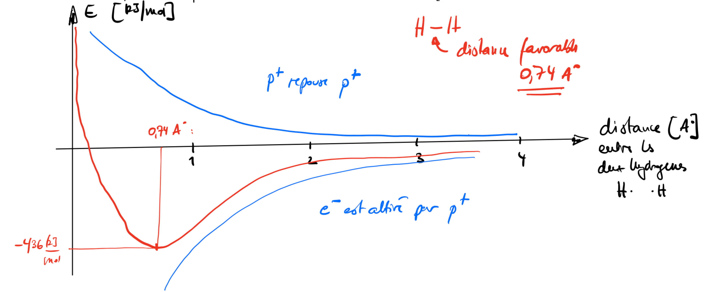

3 Liaisons, sels et molécules
S’entraîner sur ce chapitre — Ouvrir Balmer-Cloud, puis importer la banque de questions de ce chapitre.
Ce que nous savons déjà — Au chapitre 1, nous avons appris à décrire un atome : son noyau, ses électrons de valence, et la façon dont ceux-ci se répartissent en couches. Nous savons représenter un atome par sa notation de Lewis et identifier combien d’électrons célibataires il possède. Nous avons également rencontré les notions d’énergie d’ionisation et d’affinité électronique, qui décrivent la facilité avec laquelle un atome perd ou gagne un électron.
Ce que ce chapitre construit — La matière qui nous entoure n’est presque jamais composée d’atomes isolés : les atomes se lient entre eux pour former des molécules ou des sels. Ce chapitre explique pourquoi ces liaisons se forment et comment les représenter. Nous découvrirons que le type de liaison dépend avant tout de la nature des atomes impliqués — métal avec non-métal, ou non-métal avec non-métal — et que l’électronégativité affine cette classification. Nous apprendrons à construire la structure de Lewis d’une molécule et à prédire sa géométrie dans l’espace grâce au modèle VSEPR, à déterminer si elle est polaire ou apolaire, et à écrire la formule d’un sel à partir de ses ions.
Ce que nous saurons faire — À la fin de ce chapitre, nous serons capables de construire la structure de Lewis d’une molécule ou d’un sel d’oxacide à partir de sa formule brute, puis d’attribuer un code VSEPR à chaque atome central et d’en déduire la géométrie dans l’espace. Nous saurons classer une liaison selon son caractère covalent non polaire, covalent polaire ou ionique en calculant la différence d’électronégativité. Nous pourrons enfin déterminer si une molécule est polaire ou apolaire en analysant la répartition de ses charges.
Nous savons déjà que…
- Un atome est constitué d’un noyau (protons et neutrons) entouré d’électrons répartis en couches. Les électrons de la dernière couche — les électrons de valence — sont les seuls qui interviennent dans les liaisons chimiques.
- La notation de Lewis représente un atome par son symbole entouré de points correspondant à ses électrons de valence. Deux points appariés forment un doublet non liant ; un point seul est un électron célibataire.
- Les gaz nobles (groupe 18) possèdent 8 électrons de valence et sont chimiquement inertes : leur configuration est la plus stable possible.
- L’énergie d’ionisation mesure l’énergie nécessaire pour arracher un électron à un atome neutre ; l’affinité électronique mesure l’énergie libérée lorsqu’un atome capte un électron supplémentaire. Ces deux grandeurs traduisent la tendance d’un atome à perdre ou à gagner des électrons.
Mini-test de positionnement — répondons avant de continuer :
Combien d’électrons de valence possèdent respectivement \(\ce{C}\), \(\ce{N}\), \(\ce{O}\) et \(\ce{Cl}\) ? Représentez chacun en notation de Lewis.
Parmi les atomes suivants, lequel a la plus grande tendance à perdre un électron, et lequel a la plus grande tendance à en gagner un : \(\ce{Na}\), \(\ce{Cl}\), \(\ce{Mg}\), \(\ce{O}\) ? Justifiez en une phrase à partir de leur configuration électronique.
Donnez la configuration électronique de \(\ce{S}\) (\(Z = 16\)) et de \(\ce{P}\) (\(Z = 15\)). Combien d’électrons célibataires chacun possède-t-il en notation de Lewis ?
Si nous répondons sans hésiter aux trois questions, nous sommes dans votre zone de confort — passez directement à la Zone 2.
3.1 Pourquoi les atomes se lient
Au chapitre 1, nous avons décrit les atomes isolés — leur noyau, leurs électrons de valence, leur notation de Lewis. Nous avons volontairement mis de côté une réalité fondamentale : les atomes se lient.
Pourquoi les atomes se lient? Un atome neutre isolé n’est généralement pas dans son état d’énergie minimale.
Si nous rapprochons un atome neutre d’un autre atome neutre, le système formé des deux atomes peut alors optimiser son arrangement électronique pour perdre de l’énergie. La différence d’énergie entre les deux atomes isolés et le nouvelle arrangement électroniques constitue la force motrice de toute liaison chimique. Ce qui maintient la liaison entre les deux atomes, c’est l’arrangement électronique qui abaisse l’énergie totale du système. La liaison est une réponse à une contrainte énergétique.
Analogie : Imaginons deux aimants que l’on approche lentement. À grande distance, ils ne s’influencent pas. En se rapprochant, ils s’attirent et se stabilisent dans une position d’équilibre. Si on les force à se coller davantage, ils se repoussent. Il existe un arrangement entre les deux aimants où l’énergie est minimale. Limite de l’analogie : les aimants exercent une force magnétique classique ; la liaison chimique entre deux atomes résulte d’une interaction électrostatique de nature quantique, où la distribution des électrons obéit aux règles des orbitales.
Il existe un arrangement précis dans lequelle l’énergie du système est minimale. Cet arrangement électronique peut prendre grossièrement 3 situations différentes en fonction du type d’atome qui s’arrange. C’est tout le sujet de ce chapitre.
Prenons une des trois situations.
Exemple: deux atomes d’hydrogène
Lorsque deux atomes d’hydrogène s’approchent, leurs électrons et leurs noyaux interagissent. Il existe un arrangement précis dans lequelle l’énergie du système est minimale. Cet arrangement dans ce cas prend la forme de ce que nous appelons une liaisons covalente.
- en deçà, la répulsion entre les deux noyaux positifs l’emporte ;
- au-delà, l’attraction n’est plus suffisante.
La molécule \(\ce{H2}\) se forme exactement à cette distance d’équilibre.

Trois points à retenir avant de continuer :
- Les atomes se lient parce que cela abaisse l’énergie du système.
- La rupture d’une liaison coûte de l’énergie ; sa formation en libère.
3.2 Représentation des molécules
Nous allons travailler maintenant les outils pour représenter les liaisons entre atomes. La notation de Lewis, introduite au chapitre 1, s’étend ici en un modèle complet permettant de construire des molécules probables et d’en exclure des improbables.
3.2.1 Le modèle de Lewis — quatre principes
Comme nous l’avons déjà mentionné, seuls les électrons de valence — ceux des dernières sous-couches \(s\) et \(p\) — jouent un rôle dans les liaisons chimiques. Les électrons des couches internes (électrons de coeur) restent spectateurs.
Formalisation : entre 1916 et 1919, Gilbert Newton Lewis, Walther Kossel et Irving Langmuir ont formalisé une théorie des liaisons reposant sur quatre principes :
Les électrons de valence — ceux des dernières sous-couches \(s\) et \(p\) — jouent un rôle essentiel dans les liaisons. Les électrons des couches internes n’interviennent pas.
Une liaison covalente se forme lorsque deux atomes partagent un doublet d’électrons.
Une liaison ionique se forme lorsqu’un électron est transféré d’un atome à un autre, créant des ions de charges opposées.
Les électrons sont partagés ou transférés de façon que chaque atome soit entouré de 8 électrons — c’est la règle de l’octet. Pour \(\ce{H}\) et \(\ce{Li}\), la configuration stable est celle de l’hélium : 2 électrons.
Attention : la règle de l’octet connaît des exceptions. Les éléments de la troisième période et au-delà peuvent dépasser 8 électrons grâce à leurs orbitales \(d\) disponibles — c’est l’hypervalence, traitée à la section suivante. Par ailleurs, certaines espèces stables comme \(\ce{BH3}\) ne respectent pas strictement l’octet.
Ces 4 règles seront rediscutée tout au long de ce chapitre.
Note historique — L’octet : une règle empirique, pas une loi Gilbert Lewis formule sa théorie en 1916, avant que la mécanique quantique n’existe. Il ne sait pas pourquoi les atomes cherchent 8 électrons — il observe simplement que les composés stables ont tendance à satisfaire cette configuration. La règle de l’octet est donc empirique : elle fonctionne remarquablement pour les éléments de la 2e période, mais Lewis lui-même savait qu’elle avait des exceptions. \(\ce{BH3}\), \(\ce{PCl5}\), \(\ce{SF6}\).
3.2.2 Formules brute, semi-développée, développée
Pour décrire une espèce chimique, la chimie dispose de trois types de formules, de la plus compacte à la plus informative. Certaines délivrent peu d’information, d’autres beaucoup. Laquelle choisir ? Cela dépend de ce que l’on veut montrer.
La formule brute indique uniquement la nature et le nombre de chaque atome présent — c’est l’équivalent d’un inventaire, sans aucune information sur les liaisons intramoléculaires. Par convention, le carbone est cité en premier, l’hydrogène en deuxième, puis les autres éléments par ordre alphabétique.
Exemple : \(\ce{C2H6O}\) — cette formule nous dit que la substance contient 2 carbones, 6 hydrogènes et un oxygène. Mais est-ce \(\ce{CH3CH2OH}\) ou \(\ce{CH3OCH3}\) ? Rien dans la formule brute ne permet de trancher.
La formule semi-développée regroupe les atomes d’hydrogène sur l’atome qui les porte. Elle donne une première idée de la connectivité entre atomes lourds — une séquence, déjà bien plus restrictive que la formule brute.
Exemples : \(\ce{CH3CH2OH}\), \(\ce{CH3COONa}\).
La formule développée représente explicitement toutes les liaisons : un tiret pour une liaison simple, deux tirets pour une liaison double, trois tirets pour une liaison triple. Elle laisse également apparaître les charges formelles des ions.
Exemple : \(\ce{H3C-CH2-OH}\), \(\ce{CH3COO^{-}\ Na^{+}}\).
Ce chapitre vous permettra de construire ces trois formules. A comprendre toutefois que la formule développée demande un certain savoir qui sera développée en détail dans les sections suivantes. Savoir constuire une formule développée nous permet facilement de la transformer en formule semi-developpée et formule brute. La compexicité est de gérer les formules développée.
Attention : la formule développée ne dit pas tout sur la forme réelle de la molécule dans l’espace. Il s’avère que deux molécules peuvent avoir la même formule développée plane mais des géométries tridimensionnelles différentes. Ce niveau de détail important ne sera pas traité dans ce tome.
| Composé | Formule brute | Semi-développée | Développée |
|---|---|---|---|
| Éthanol | \(\ce{C2H6O}\) | \(\ce{CH3CH2OH}\) | \(\ce{H3C-CH2-OH}\) |
| Acide acétique | \(\ce{C2H4O2}\) | \(\ce{CH3COOH}\) | \(\ce{H3C-C(=O)-OH}\) |
| Propane | \(\ce{C3H8}\) | \(\ce{CH3CH2CH3}\) | \(\ce{H3C-CH2-CH3}\) |
Exercices :
- Représentez en notation de Lewis les atomes suivants et indiquez le nombre d’électrons célibataires de chacun : \(\ce{C}\), \(\ce{N}\), \(\ce{O}\), \(\ce{F}\), \(\ce{S}\).1
- Donnez les formules brute, semi-développée et développée du méthane \(\ce{CH4}\), de l’acide acétique \(\ce{CH3COOH}\) et du propane \(\ce{C3H8}\).[^2]
- Vrai ou faux ? La formule brute de deux molécules différentes peut être identique. Donnez un exemple.[^3]
- La règle de l’octet est-elle respectée dans \(\ce{H2O}\), \(\ce{NH3}\), \(\ce{CO2}\) ? Vérifiez pour chaque atome.[^4]
3.3 Énergie de liaison
Nous avons annoncé que la liaison entre deux atomes est toujours accompagnée d’une diminution d’énergie du système. Pouvons-nous mesurer les énergies de liaisons ? La réponse est oui, et ceci depuis de nombreuses années.
Ce que les valeurs d’énergie de liaison nous révèlent : chaque type de liaison est caractérisé par une énergie bien définie, mesurable et reproductible. L’énergie de liaison correspond exactement à ce gain de stabilité. Plus ce gain est grand, plus la liaison est stable.
Formalisation : l’énergie de liaison \(E_\text{liaison}\) est habituellement exprimée en kJ/mol, c’est-à-dire l’énergie qu’il faut fournir pour rompre une mole de liaisons entre deux atomes à l’état gazeux. Elle est toujours positive — rompre une liaison coûte de l’énergie.
Par convention, en chimie, toute valeur énergétique est obtenue en soustrayant l’énergie de l’état initial à celle de l’état final. Par exemple, lorsque le dichlore gazeux \(\ce{Cl2}\) rompt sa liaison, nous calculons l’énergie du système après rupture (\(\ce{Cl^. + Cl^.}\)) moins l’énergie du système avant rupture (\(\ce{Cl-Cl}\)). Si ce calcul est positif, le système après rupture a plus d’énergie que le système avant — nous avons bien dû lui en fournir. Ainsi, une énergie de liaison positive désigne l’énergie à apporter au système pour casser la liaison. Si certaines tables mentionnent des énergies de liaison négatives, cela signifie qu’elles expriment l’énergie libérée lors de la formation de la liaison — le signe change, la physique reste la même.
Au niveau macroscopique : les réactions chimiques se manifestent à l’échelle du laboratoire par des échanges de chaleur avec l’environnement. Pourquoi ? Parce que toute réaction chimique implique simultanément des liaisons qui se rompent — ce qui nécessite de l’énergie — et des liaisons qui se forment — ce qui en libère. Lorsqu’une flamme brûle, le combustible et l’oxygène rompent leurs propres liaisons intramoléculaires ; lorsque le \(\ce{CO2}\) et le \(\ce{H2O}\) se forment, de nouvelles liaisons intramoléculaires apparaissent et libèrent de l’énergie. Le bilan est positif : les liaisons formées dans les produits sont plus stables que celles rompues dans les réactifs.
Ces notions — exothermique, endothermique, bilan énergétique d’une réaction — seront traitées rigoureusement dans le tome 2. Nous retenons ici l’essentiel : former une liaison libère de l’énergie, la rompre en coûte.
Représentation symbolique :
\[\ce{H2(g) -> 2H(g)} \quad E_\text{liaison}(\ce{H-H}) = 436\ \text{kJ/mol}\]
Quelques valeurs à connaître :
| Liaison | Énergie (kJ/mol) | Longueur (pm) |
|---|---|---|
| \(\ce{H-H}\) | 436 | 74 |
| \(\ce{F-F}\) | 155 | 142 |
| \(\ce{H-F}\) | 565 | 92 |
| \(\ce{C-C}\) | 347 | 154 |
| \(\ce{C=C}\) | 614 | 134 |
| \(\ce{C#C}\) | 839 | 120 |
| \(\ce{C-H}\) | 413 | 109 |
| \(\ce{O-H}\) | 463 | 96 |
| \(\ce{N#N}\) | 945 | 110 |
Deux tendances se dégagent : plus une liaison est multiple, plus elle est courte et énergétique. Et la liaison \(\ce{H-F}\) est bien plus forte que la moyenne géométrique de \(\ce{H-H}\) et \(\ce{F-F}\) — ce surplus de stabilité traduit une asymétrie dans la répartition des électrons, que la notion d’électronégativité permet de quantifier.
3.4 Électronégativité
Nous comprenons par la section précédente que des liaisons sont plus ou moins stables. L’énergie de liaison en kJ/mol en est une mesure rigoureuse, mais peu commode au quotidien : elle nécessite des mesures expérimentales pour chaque paire d’atomes. Il s’avère qu’une approche plus qualitative, fondée sur une propriété intrinsèque de chaque atome, permet de classer et de prédire le comportement des liaisons de manière bien plus efficace.
Conception courante : on confond souvent électronégativité et affinité électronique. L’affinité électronique mesure l’énergie libérée lorsqu’un atome isolé capte un électron. L’électronégativité mesure la tendance d’un atome à attirer les électrons d’une liaison au sein d’une molécule. Les deux grandeurs sont liées, mais ne sont pas interchangeables.
Formalisation : l’électronégativité \(\chi\) est la mesure de la tendance d’un atome à attirer les électrons lors de la formation d’une liaison. C’est une valeur relative, sans unité dans l’échelle de Pauling. Plus \(\chi\) est élevée, plus l’atome attire les électrons.
Périodicité :
- Dans une période, de gauche à droite : l’électronégativité augmente (non applicable aux éléments de transition).
- Dans un groupe, de haut en bas : l’électronégativité diminue.
3.4.1 L’échelle de Pauling
Linus Pauling a construit son échelle à partir d’une observation expérimentale : l’énergie de liaison d’une liaison hétéronucléaire \(\ce{A-B}\) est systématiquement supérieure à la moyenne géométrique des énergies des liaisons homonucléaires \(\ce{A-A}\) et \(\ce{B-B}\). Cet excès d’énergie \(\Delta\) traduit l’asymétrie dans le partage des électrons :
\[\Delta = E_\text{liaison}(\ce{A-B}) - \sqrt{E_\text{liaison}(\ce{A-A}) \cdot E_\text{liaison}(\ce{B-B})}\]
La différence d’électronégativité entre les deux atomes est alors définie par :
\[|\chi_A - \chi_B| = 0{,}102 \cdot \sqrt{\Delta} \quad (\Delta \text{ en kJ/mol})\]
Appliquons ceci à la liaison \(\ce{H-F}\) :
\[\Delta = 565 - \sqrt{436 \times 155} \approx 565 - 260 = 305\ \text{kJ/mol}\]
\[|\chi_\ce{F} - \chi_\ce{H}| = 0{,}102 \cdot \sqrt{305} \approx 0{,}102 \times 17{,}5 \approx 1{,}8\]
Pauling a alors fixé par convention \(\chi(\ce{F}) = 4{,}0\) — le fluor étant l’élément le plus électronégatif. On en déduit \(\chi(\ce{H}) = 4{,}0 - 1{,}8 = 2{,}2\), très proche de la valeur tabulée \(2{,}1\) (l’écart est dû aux arrondis successifs du calcul). En procédant ainsi pour toutes les paires d’atomes du tableau périodique, on obtient l’échelle complète.
Note historique — L’électronégativité naît d’une anomalie Pauling n’a pas construit son échelle par intuition — il a remarqué une anomalie. En calculant des milliers d’énergies de liaison, il observa systématiquement que les liaisons hétéronucléaires \(\ce{A-B}\) libèrent plus d’énergie que prévu par la simple moyenne des liaisons homonucléaires. Ce surplus, qu’il nomma énergie de résonance ionique, était sa façon de quantifier quelque chose que personne n’avait su mesurer : l’inégalité dans le partage des électrons. L’électronégativité n’est donc pas une propriété que l’on mesure directement — c’est une grandeur construite pour expliquer une anomalie.
3.4.2 L’échelle de Mulliken
Robert Mulliken a proposé une approche différente : l’électronégativité est définie directement à partir de l’énergie d’ionisation \(E_I\) et de l’affinité électronique \(A_e\) de l’atome :
\[\chi_\text{Mulliken} = 0{,}317 \cdot \frac{E_I + A_e}{2}\]
Exemple pour l’hydrogène :
\[\chi_\text{Mulliken}(\ce{H}) = 0{,}317 \cdot \frac{13{,}53 + 0{,}75}{2} \approx 2{,}27\]
— très proche de la valeur de Pauling (\(2{,}1\)), confirmant la cohérence des deux approches.
Note historique — Une seconde définition, vingt ans plus tard En 1934, Robert Mulliken propose une voie alternative à celle de Pauling : au lieu de partir de mesures d’énergie de liaison, il construit l’électronégativité directement à partir de deux propriétés de l’atome isolé — son énergie d’ionisation et son affinité électronique. Les deux échelles, nées de données totalement différentes, convergent presque exactement : une confirmation indépendante que l’électronégativité désigne bien une réalité physique, et non un artefact de calcul.
Le fluor est l’élément le plus électronégatif (\(\chi = 4{,}0\)) ; le césium est le moins électronégatif (\(\chi = 0{,}7\)). Les gaz nobles ne possèdent pas d’électronégativité dans l’échelle de Pauling, car ils ne forment pratiquement pas de liaisons dans les conditions ordinaires.
Valeurs de Pauling pour les éléments courants :
| Élément | \(\chi\) | Élément | \(\chi\) |
|---|---|---|---|
| \(\ce{F}\) | 4,0 | \(\ce{C}\) | 2,5 |
| \(\ce{O}\) | 3,5 | \(\ce{S}\) | 2,5 |
| \(\ce{N}\) | 3,0 | \(\ce{P}\) | 2,1 |
| \(\ce{Cl}\) | 3,0 | \(\ce{H}\) | 2,1 |
| \(\ce{Br}\) | 2,8 | \(\ce{Na}\) | 0,9 |
| \(\ce{I}\) | 2,5 | \(\ce{K}\) | 0,8 |
| \(\ce{Si}\) | 1,8 | \(\ce{Cs}\) | 0,7 |
Pourquoi deux échelles coexistent-elles ? Les deux approches mesurent la même réalité physique — la tendance d’un atome à attirer les électrons d’une liaison — mais à partir de données différentes. Pauling part de mesures thermochimiques : des énergies de liaison obtenues expérimentalement sur des molécules réelles. Mulliken part de propriétés atomiques intrinsèques : l’énergie d’ionisation et l’affinité électronique d’un atome isolé. L’échelle de Pauling est empirique et ancrée dans l’observation directe des liaisons ; l’échelle de Mulliken est plus fondamentale et repose sur des grandeurs mesurables indépendamment de toute liaison. Les valeurs obtenues par les deux méthodes sont très proches — ce qui confirme la cohérence du concept. En pratique, l’échelle de Pauling est la référence standard en chimie : c’est celle des manuels, des tables et des règles de classification des liaisons. L’échelle de Mulliken est davantage utilisée en physique et en chimie théorique. Une mise en garde importante : il ne faut jamais comparer des valeurs issues de deux échelles différentes.
3.5 Types de liaisons intramoléculaires selon \(\Delta\chi\)
Nous atteignons ici le cœur du chapitre. Qu’une liaison se forme ne signifie pas nécessairement que deux atomes restent spatialement solidaires — et c’est précisément là que réside la difficulté. Comprendre pourquoi les atomes se lient est une chose ; comprendre ce qui en résulte en est une autre.
Il existe communément deux types extremes de liaisons à l’intérieur d’une substance.
La liaison covalente et la liaison ionique.
La liaison covalente effectivement lie spatialement les deux atomes l’un à l’autre.
La liaison ionique aboutit à deux entités chargées mais la distance entre ces deux entités n’a plus d’importance quant à la stabilité de la liaison.
3.5.1 Comment différencier une liaision covalente d’une liaison ionique?**
Deux moyens assez simples nous permettent de déterminer si la liaison entre deux atomes est de type covalente (spatialement lié) ou de type ionique (spatialement non lié)
Critère métal / non-métal des atomes partageant la liaison.
La différence d’électronégativité \(\Delta\chi\) entre les deux atomes partageant la liaison.
3.5.1.1 Critère métal / non-métal : un raccourci pratique**
Dans la pratique, une règle de position dans le tableau périodique couvre 90 % des cas rencontrés — et en découle directement.
Formalisation : trois règles simples couvrent l’essentiel :
Métal + non-métal → liaison ionique : le métal cède ses électrons de valence au non-métal. Au niveau macroscopique : solide cristallin, cassant, point de fusion élevé. Exemples : \(\ce{NaCl}\), \(\ce{MgO}\), \(\ce{CaF2}\).
Non-métal + non-métal → liaison covalente : les deux atomes partagent des électrons. Au niveau macroscopique : substances moléculaires — gaz, liquides ou solides à point de fusion bas selon les forces intermoléculaires. Exemples : \(\ce{H2O}\), \(\ce{CO2}\), \(\ce{NH3}\).
Métal + métal → liaison métallique : les électrons de valence sont délocalisés dans tout le réseau. Au niveau macroscopique : conductivité électrique et thermique, malléabilité, ductilité, éclat métallique. Il n’existe pas de modèle de Lewis pour cette liaison — on la définit par ces propriétés macroscopiques. Exemples : \(\ce{Fe}\), \(\ce{Cu}\), alliages.
Cette classification repose sur une logique énergétique. Les métaux ont une faible énergie d’ionisation — ils cèdent facilement leurs électrons. Les non-métaux ont une grande affinité électronique — ils les capturent volontiers. Quand les deux se rencontrent, le transfert est total et il se forme des ions. Quand deux non-métaux se rencontrent, aucun ne cède totalement — ils partagent.
Attention : cette règle ne distingue pas liaison covalente polaire de liaison covalente non polaire — c’est précisément ce que \(\Delta\chi\), introduit à la section précédente, permet d’affiner.
3.5.1.2 La différence d’électronégativité \(\Delta\chi\)**
La classification par \(\Delta\chi\) est rigoureuse, mais elle nécessite de connaître les valeurs d’électronégativité de chaque atome.
Pour rappel, la différence d’électronégativité nous indique la différence qu’il y a dans la tendance à attirer les électrons des atomes dans la même liaison.
Liaison covalente non polaire \((\Delta\chi \leq 0{,}4)\)
Si la différence d’électronégativité est nulle ou très faible, les électrons sont partagés symétriquement. Aucune charge partielle n’apparaît.
Au niveau particulaire : le nuage électronique est centré entre les deux noyaux.
Exemples : \(\ce{H-H}\) (\(\Delta\chi = 0\)), \(\ce{C-H}\) (\(\Delta\chi = 0{,}4\)), \(\ce{C-C}\) (\(\Delta\chi = 0\)), \(\ce{O2}\), \(\ce{N2}\).
Ces liaisons apparaissent entre deux non-métaux d’électronégativité identique ou très proche.
Liaison covalente polaire \((0{,}4 < \Delta\chi < 1{,}7)\)
L’un des deux atomes attire les électrons plus fortement. Le nuage électronique est décentré vers l’atome le plus électronégatif, qui acquiert une charge partielle négative \(\delta^-\) ; l’autre acquiert \(\delta^+\).
Attention : les charges partielles \(\delta^+\) et \(\delta^-\) ne sont pas des charges entières — ce ne sont pas des ions.
Représentation symbolique :
\[\ce{H}^{\delta^+}-\ce{Cl}^{\delta^-} \qquad \Delta\chi = |3{,}0 - 2{,}1| = 0{,}9\]
Exemples : \(\ce{O-H}\) (\(\Delta\chi = 1{,}4\)), \(\ce{N-H}\) (\(\Delta\chi = 0{,}9\)), \(\ce{C-F}\) (\(\Delta\chi = 1{,}5\)).
Ces liaisons apparaissent entre deux non-métaux d’électronégativité suffisamment différente.
Liaison ionique \((\Delta\chi \geq 1{,}7)\)
Le transfert d’électrons est complet. Il se forme deux ions de charges opposées.
Au niveau macroscopique : les composés ioniques sont des solides cristallins à point de fusion élevé, conducteurs à l’état fondu ou dissous.
Au niveau particulaire : les électrons de valence du métal sont cédés au non-métal.
Représentation symbolique :
\[\ce{Na -> Na+ + e-} \qquad \ce{Cl + e- -> Cl-}\]
Ces liaisons apparaissent entre un métal et un non-métal.
Exemples : \(\ce{NaCl}\) (\(\Delta\chi = 2{,}1\)), \(\ce{MgO}\) (\(\Delta\chi = 2{,}3\)), \(\ce{CaF2}\) (\(\Delta\chi = 3{,}0\)).
Tableau récapitulatif :
| \(\Delta\chi\) | Type de liaison | Atomes impliqués | Charges |
|---|---|---|---|
| \(\leq 0{,}4\) | Covalente non polaire | Non-métal / non-métal | Aucune |
| \(0{,}4\) à \(1{,}7\) | Covalente polaire | Non-métal / non-métal | \(\delta^+\) / \(\delta^-\) |
| \(\geq 1{,}7\) | Ionique | Métal / non-métal | Charges entières |
| \(\approx 0\) | Métallique | Métal / métal | Électrons délocalisés |
Attention : les seuils \(0{,}4\) et \(1{,}7\) sont des conventions pratiques, non des frontières physiques absolues. La nature d’une liaison est un continuum.
3.5.1.3 Les molécules et les sels
Les répercussions des types de liaisons à l’intérieur d’une substance sont très importantes et cela ouvre deux mondes distincts :
Le monde des molécules, substances composées uniquement de liaisons covalentes — donc tous les atomes sont spatialement dépendants. Les molécules peuvent être gazeuse, liquide ou solide.
Le monde des sels, substances composées d’atomes qui ont au moins une liaison ionique. Les sels sont solides.
Exercices :
- Classez les liaisons suivantes par ordre croissant de différence d’électronégativité : \(\ce{C-H}\), \(\ce{N-H}\), \(\ce{O-H}\), \(\ce{C-F}\), \(\ce{C-Cl}\). Laquelle est la plus polarisée ?2
- Sans calculer \(\Delta\chi\), identifiez le type de liaison (ionique, covalente, métallique) dans : \(\ce{NaBr}\), \(\ce{O2}\), \(\ce{Al}\), \(\ce{PCl3}\), \(\ce{BaO}\), \(\ce{N2}\).[^6]
- Pour chacun des composés suivants, calculez \(\Delta\chi\) et classez la liaison : \(\ce{KBr}\), \(\ce{HF}\), \(\ce{CO2}\), \(\ce{MgCl2}\), \(\ce{CH4}\).[^7]
- Le fluorure d’hydrogène \(\ce{HF}\) a une énergie de liaison de 565 kJ/mol. La moyenne géométrique de \(E(\ce{H-H}) = 436\) kJ/mol et \(E(\ce{F-F}) = 155\) kJ/mol vaut environ 260 kJ/mol. Quel phénomène explique cet écart ?[^8]
- L’eau bout à \(100\ ^\circ\text{C}\) et \(\ce{H2S}\) à \(-60\ ^\circ\text{C}\), malgré des masses molaires proches. En vous appuyant sur \(\Delta\chi\) et le type de liaison, proposez une explication qualitative. (Nous approfondirons au chapitre 3 pourquoi une liaison polarisée influence le comportement entre molécules.)[^9]
3.5.2 Périodicité des composés \(\ce{X_aH_b}\)
Par les sections précédentes, nous comprenons qu’il y a deux grandes familles de substances : les sels et les molécules. Il suffit d’une liaison ionique pour définir une substance comme un sel. La présence d’une liaison ionique a une répercussion directe sur l’état de la matière : c’est un solide. Une petite molécule sera certainement gazeuse. Ceci se reverra au chapitre des liaisons intermoléculaires.
Amusons-nous à faire un exercice révélant au fur et à mesure les différentes règles que nous avons vues. Considérons les atomes du tableau périodique de la première et de la deuxième période. Le jeu est de former des composés contenant uniquement cet élément X et de l’hydrogène H, d’y prédire si le composé est un sel ou une molécule, sa formule brute \(\ce{X_aH_b}\) à l’aide des électrons de valence, le type de liaison entre l’élément et l’hydrogène, et l’état de la matière de la substance à \(25\ ^\circ\text{C}\) et \(1\ \text{atm}\).
Un mot de nomenclature — nous y reviendrons plus tard. Lorsqu’une liaison est polarisée, voire très polarisée, la partie négative peut prendre le suffixe -ure.
Hydrogène \(\ce{H}\) — \(\chi = 2{,}1\)
L’hydrogène possède un électron célibataire. Deux hydrogènes peuvent donc se lier.
- Type : deux non-métaux → molécule
- Formule : \(\ce{H2}\)
- Liaison : covalente non polaire (\(\Delta\chi = 0\))
- État : gaz — petite molécule covalente
- Nom : dihydrogène
Hélium \(\ce{He}\)
L’hélium n’a aucun électron célibataire — c’est un gaz noble, il ne se lie jamais. Le composé \(\ce{HeH}\) n’existe pas.
Lithium \(\ce{Li}\) — \(\chi = 1{,}0\)
Le lithium est un métal avec un électron célibataire.
- Type : métal + non-métal → sel
- Formule : \(\ce{LiH}\)
- Liaison : ionique (\(\Delta\chi = |2{,}1 - 1{,}0| = 1{,}1\)… à la limite ; en pratique \(\ce{LiH}\) est considéré ionique)
- État : solide blanc — composé ionique
- Nom : hydrure de lithium (\(\ce{Li^+ + H^- -> LiH}\))
Béryllium \(\ce{Be}\) — \(\chi = 1{,}5\)
Le béryllium est un métal avec deux électrons célibataires.
- Type : métal + non-métal → sel
- Formule : \(\ce{BeH2}\)
- Liaison : ionique (\(\Delta\chi = |2{,}1 - 1{,}5| = 0{,}6\)… à la limite ; en pratique \(\ce{BeH2}\) est considéré ionique)
- État : solide blanc — composé ionique
- Nom : hydrure de béryllium (\(\ce{Be^{2+} + 2\ H^- -> BeH2}\))
Bore \(\ce{B}\) — \(\chi = 2{,}0\)
Le bore est un métalloïde classé côté non-métaux, avec trois électrons célibataires.
- Type : non-métal + non-métal → molécule
- Formule : \(\ce{BH3}\)
- Liaison : covalente non polaire (\(\Delta\chi = |2{,}1 - 2{,}0| = 0{,}1\))
- État : gaz — petite molécule covalente
- Nom : borane (\(\ce{BH3}\))
Attention : \(\ce{BH3}\) est une exception notable à la règle de l’octet — le bore n’est entouré que de 6 électrons. C’est l’une des rares espèces stables déficientes en électrons, mentionnée à la section Lewis.
Carbone \(\ce{C}\) — \(\chi = 2{,}5\)
Le carbone est un non-métal avec quatre électrons célibataires.
- Type : deux non-métaux → molécule
- Formule : \(\ce{CH4}\)
- Liaison : covalente non polaire (\(\Delta\chi = |2{,}5 - 2{,}1| = 0{,}4\))
- État : gaz — petite molécule covalente
- Nom : méthane (\(\ce{CH4}\))
Azote \(\ce{N}\) — \(\chi = 3{,}0\)
L’azote est un non-métal avec un doublet non liant et trois électrons célibataires.
- Type : deux non-métaux → molécule
- Formule : \(\ce{NH3}\)
- Liaison : covalente polaire (\(\Delta\chi = |3{,}0 - 2{,}1| = 0{,}9\))
- État : gaz — petite molécule covalente
- Nom : ammoniac (\(\ce{NH3}\))
Oxygène \(\ce{O}\) — \(\chi = 3{,}5\)
L’oxygène est un non-métal avec deux doublets non liants et deux électrons célibataires.
- Type : deux non-métaux → molécule
- Formule : \(\ce{H2O}\)
- Liaison : covalente polaire (\(\Delta\chi = |3{,}5 - 2{,}1| = 1{,}4\))
- État : liquide ! Exception par rapport à la grande majorité des petites molécules covalentes — ceci s’expliquera au chapitre des liaisons intermoléculaires.
- Nom : eau (\(\ce{H2O}\))
Fluor \(\ce{F}\) — \(\chi = 4{,}0\)
Le fluor est un non-métal avec trois doublets non liants et un électron célibataire.
- Type : deux non-métaux → molécule
- Formule : \(\ce{HF}\)
- Liaison : covalente très polaire (\(\Delta\chi = |4{,}0 - 2{,}1| = 1{,}9\)… à la limite ionique ; en pratique considéré covalente polaire)
- État : gaz — petite molécule covalente
- Nom : fluorure d’hydrogène (\(\ce{HF}\))
Néon \(\ce{Ne}\)
Le néon possède 8 électrons de valence — configuration d’un gaz noble complète. Aucun électron célibataire, aucune liaison possible. Le composé \(\ce{NeH}\) n’existe pas.
Tableau récapitulatif — périodes 1, 2 et 3 :
| Substance | Type | Formule | Liaison | \(\Delta\chi\) | État (\(25\ ^\circ\text{C}\)) |
|---|---|---|---|---|---|
| Dihydrogène | Corps pur simple moléculaire | \(\ce{H2}\) | Covalente non polaire | \(0\) | Gaz |
| Hélium | Corps pur simple élémentaire | \(\ce{He}\) | — | — | Gaz |
| Hydrure de lithium | Corps pur composé ionique | \(\ce{LiH}\) | Ionique | \(1{,}1\) | Solide |
| Hydrure de béryllium | Corps pur composé ionique | \(\ce{BeH2}\) | Ionique | \(0{,}6\) | Solide |
| Borane | Corps pur composé moléculaire | \(\ce{BH3}\) | Covalente non polaire | \(0{,}1\) | Gaz |
| Méthane | Corps pur composé moléculaire | \(\ce{CH4}\) | Covalente non polaire | \(0{,}4\) | Gaz |
| Ammoniac | Corps pur composé moléculaire | \(\ce{NH3}\) | Covalente polaire | \(0{,}9\) | Gaz |
| Eau | Corps pur composé moléculaire | \(\ce{H2O}\) | Covalente polaire | \(1{,}4\) | Liquide |
| Fluorure d’hydrogène | Corps pur composé moléculaire | \(\ce{HF}\) | Covalente très polaire | \(1{,}9\) | Gaz |
| Néon | Corps pur simple élémentaire | \(\ce{Ne}\) | — | — | Gaz |
| Hydrure de sodium | Corps pur composé ionique | \(\ce{NaH}\) | Ionique | \(1{,}2\) | Solide |
| Hydrure de magnésium | Corps pur composé ionique | \(\ce{MgH2}\) | Ionique | \(0{,}7\) | Solide |
| Silane | Corps pur composé moléculaire | \(\ce{SiH4}\) | Covalente non polaire | \(0{,}3\) | Gaz |
| Phosphine | Corps pur composé moléculaire | \(\ce{PH3}\) | Covalente non polaire | \(0\) | Gaz |
| Sulfure d’hydrogène | Corps pur composé moléculaire | \(\ce{H2S}\) | Covalente polaire | \(0{,}4\) | Gaz |
| Chlorure d’hydrogène | Corps pur composé moléculaire | \(\ce{HCl}\) | Covalente polaire | \(0{,}9\) | Gaz |
| Argon | Corps pur simple élémentaire | \(\ce{Ar}\) | — | — | Gaz |
3.6 Les liaisons covalentes et les molécules
Dans cette section, nous allons approfondir les liaisons covalentes et les molécules. Comme nous l’avons mentionné, les molécules ne contiennent que des liaisons covalentes, qui sont donc contraignantes spatialement. Nous allons d’abord constater qu’il en existe des simples, des doubles et triples. Nous verrons aussi qu’il peut y avoir de l’hydpervalence. Ensuite, nous vous donnerons une procédure efficace pour obtenir des formules développées correctes. Nous investiguerons ensuite la géométrie autour de chaque atome d’une molécule. On exploitera les charges partielles et nous pourrons alors conclure si des molécules sont considérées comme polaires ou non.
Attention : cette section introduit plusieurs notions interdépendantes — liaisons simples/doubles/triples, procédure de Lewis, hypervalence, VSEPR, polarité. Chaque notion s’appuie sur la précédente. Lisez-les dans l’ordre.
3.6.1 Liaisons simples, doubles, triples
Deux atomes peuvent mettre en commun deux ou trois paires d’électrons simultanément, formant des liaisons multiples plus courtes et plus solides.
Formalisation :
- Liaison simple : un doublet liant partagé — représentée par un tiret (\(\ce{A-B}\)).
- Liaison double : deux doublets liants partagés — représentée par deux tirets (\(\ce{A=B}\)).
- Liaison triple : trois doublets liants partagés — représentée par trois tirets (\(\ce{A#B}\)).
Attention : il n’existe pas de liaison quadruple dans le modèle de Lewis pour les éléments des blocs \(s\) et \(p\).
Remarque Plus le nombre de doublets partagés est élevé, plus les deux noyaux sont attirés vers la région de forte densité électronique. La liaison devient plus courte et plus difficile à rompre — son énergie de liaison augmente.
Pour les hydrocarbures, la formule brute donne une indication sur la présence de liaisons multiples :
| Type de formule brute | Interprétation |
|---|---|
| \(\ce{C_nH_{2n+2}}\) | Pas de liaison multiple — alcane saturé |
| \(\ce{C_nH_{2n}}\) | Une liaison double ou un cycle |
| \(\ce{C_nH_{2n-2}}\) | Une liaison triple ou deux liaisons doubles |
Exemples :
- Liaison simple : éthane \(\ce{C2H6}\) (\(\ce{H3C-CH3}\))
- Liaison double : éthène \(\ce{C2H4}\) (\(\ce{CH2=CH2}\)), \(\ce{CO2}\) (\(\ce{O=C=O}\))
- Liaison triple : acétylène \(\ce{C2H2}\) (\(\ce{H-C#C-H}\)), \(\ce{HCN}\) (\(\ce{H-C#N}\))
Règle sur les oxygènes multiples : la liaison \(\ce{O-O}\) est très défavorable énergétiquement. On part du principe que l’oxygène ne se lie pas à lui-même, sauf dans trois cas exceptionnels à retenir : \(\ce{O2}\) (liaison double \(\ce{O=O}\)), \(\ce{H2O2}\) (liaison simple \(\ce{O-O}\)), \(\ce{O3}\) (liaison délocalisée).
3.6.2 Procédure générale pour construire une formule développée
Face à une formule brute, on pourrait être tenté de relier les notations de Lewis des atomes au hasard jusqu’à ce que les valences semblent satisfaites. Cette approche produit fréquemment des structures incorrectes.
Il existe une méthode algébrique universelle — la méthode du compte global des électrons de valence — qui permet de déterminer automatiquement le nombre de liaisons et de doublets non liants à partir de n’importe quelle formule brute. Elle est rigoureuse, mais laborieuse et peu intuitive : elle nécessite de compter les électrons disponibles, les électrons nécessaires pour satisfaire tous les octets, d’en déduire le nombre de doublets liants, puis de répartir les doublets non liants. Nous ne la traitons pas dans ce manuel.
Pour l’immense majorité des molécules rencontrées dans ce cours, la procédure ci-dessous est bien plus rapide et directe.
Principe : dans la grande majorité des molécules contenant de l’oxygène et de l’hydrogène, les atomes d’hydrogène liés à un oxygène forment des groupes hydroxyle \(\ce{-OH}\). Construire ces groupes en premier réduit considérablement le nombre de structures à explorer.
Attention : cette procédure guide vers une structure correcte parmi les possibles — elle ne garantit pas de trouver toutes les molécules ayant la même formule brute. Deux structures différentes pour une même formule brute sont des isomères constitutionnels — un concept que nous reverrons en chimie organique.
Procédure en quatre étapes (atome central de la 2e période) :
- Inventaire des éléments en notation de Lewis.
- Former autant de groupes \(\ce{-OH}\) que possible.
- Lier le ou les groupes \(\ce{-OH}\) au non-métal central.
- Lier les oxygènes restants au non-métal central.
Attention : cette procédure s’applique aux atomes centraux de la deuxième période (\(\ce{C}\), \(\ce{N}\), \(\ce{O}\), \(\ce{F}\)). Pour les atomes de la troisième période et au-delà (\(\ce{P}\), \(\ce{S}\), \(\ce{Cl}\)…), une cinquième étape est nécessaire — c’est l’hypervalence, traitée ci-dessous.
Exemple travaillé 1 : \(\ce{HNO2}\) (acide nitreux)
Étape 1 : un \(\ce{H}\), un \(\ce{N}\) (3 célibataires, 1 doublet non liant), deux \(\ce{O}\) (2 célibataires chacun).
Étape 2 : un seul \(\ce{H}\) on forme un groupe \(\ce{-OH}\).
Étape 3 : \(\ce{HO-}\) se lie à \(\ce{N}\) par une liaison simple.
Étape 4 : le second \(\ce{O}\) et \(\ce{N}\) forment ensemble une liaison double \(\ce{N=O}\).
Résultat : \(\ce{H-O-N=O}\)
Vérification : \(\ce{H}\) (2 e\(^-\)), chaque \(\ce{O}\) (8 e\(^-\)), \(\ce{N}\) (8 e\(^-\)) — octet respecté partout.
Exemple travaillé 2 : \(\ce{H2CO3}\) (acide carbonique)
Étape 1 : deux \(\ce{H}\), un \(\ce{C}\) (4 célibataires), trois \(\ce{O}\).
Étape 2 : deux \(\ce{H}\) deux groupes \(\ce{-OH}\).
Étape 3 : les deux groupes \(\ce{HO-}\) se lient au carbone.
Étape 4 : le troisième \(\ce{O}\) et \(\ce{C}\) forment une liaison double \(\ce{C=O}\).
Résultat : \(\ce{HO-C(=O)-OH}\)
Exemple travaillé 3 : \(\ce{C2H6O}\) (éthanol)
Étape 1 : deux \(\ce{C}\) (4 célibataires chacun), six \(\ce{H}\), un \(\ce{O}\) (2 célibataires, 2 doublets non liants).
Étape 2 : un seul \(\ce{O}\) un groupe \(\ce{-OH}\).
Étape 3 : \(\ce{HO-}\) se lie à un carbone.
Étape 4 : aucun \(\ce{O}\) restant. On relie les deux carbones et on complète avec les hydrogènes restants.
Résultat : \(\ce{H3C-CH2-OH}\)
Note : \(\ce{C2H6O}\) admet aussi la structure \(\ce{H3C-O-CH3}\) (diméthyléther) — même formule brute, connectivité différente : ce sont des isomères constitutionnels.
3.6.3 Hypervalence et oxacides
La règle de l’octet s’applique rigoureusement aux éléments de la deuxième période, mais les éléments de la troisième période et au-delà peuvent légitimement dépasser huit électrons de valence grâce à leurs orbitales \(d\) vacantes.
Formalisation : à partir de la troisième période, un atome peut casser l’un de ses doublets non liants en deux électrons célibataires, puis engager ces électrons dans une double liaison supplémentaire avec un oxygène. On parle d’hypervalence.
Pour qu’une molécule soit hypervalente, trois conditions doivent être réunies :
- Tous les électrons célibataires de l’atome central ont déjà été engagés (étapes 1 à 4 épuisées).
- L’atome central appartient à la troisième période ou plus (\(\ce{P}\), \(\ce{S}\), \(\ce{Cl}\), \(\ce{Br}\), \(\ce{I}\)…).
- Des oxygènes restent non liés après l’étape 4.
Procédure en cinq étapes (atome central de la 3e période ou plus) : Les étapes 1 à 4 sont identiques. L’étape 5 consiste à casser un doublet non liant de l’atome central en deux électrons célibataires et former une liaison double \(\ce{X=O}\) avec l’oxygène restant. Cette étape se répète autant de fois que nécessaire.
- Inventaire des éléments en notation de Lewis.
- Former autant de groupes \(\ce{-OH}\) que possible.
- Lier le ou les groupes \(\ce{-OH}\) au non-métal central.
- Lier les oxygènes restants au non-métal central.
- Hypervalence : si des oxygènes restent non liés après l’étape 4, casser un doublet non liant de l’atome central en deux électrons célibataires et former une liaison double \(\ce{X=O}\). Répéter autant de fois que nécessaire.
Les oxacides : l’hypervalence se rencontre très fréquemment dans les oxacides — des acides de formule générique \(\ce{H_xXO_y}\), où \(\ce{X}\) est un non-métal autre que l’oxygène ou le fluor.
| Nom | Formule |
|---|---|
| Acide carbonique | \(\ce{H2CO3}\) |
| Acide nitreux | \(\ce{HNO2}\) |
| Acide sulfurique | \(\ce{H2SO4}\) |
| Acide phosphorique | \(\ce{H3PO4}\) |
| Acide hypochloreux | \(\ce{HClO}\) |
| Acide chloreux | \(\ce{HClO2}\) |
| Acide chlorique | \(\ce{HClO3}\) |
| Acide perchlorique | \(\ce{HClO4}\) |
| Acide iodique | \(\ce{HIO3}\) |
| Acide phosphoreux | \(\ce{H3PO3}\) |
Exemple travaillé 1 : acide phosphorique \(\ce{H3PO4}\)
Étapes 1 à 3 : trois \(\ce{H}\) trois groupes \(\ce{-OH}\) liés au phosphore (3 liaisons simples \(\ce{P-OH}\), épuisant les 3 électrons célibataires de \(\ce{P}\)).
Étape 4 : il reste un \(\ce{O}\) et \(\ce{P}\) n’a plus d’électrons célibataires. Blocage.
Étape 5 (hypervalence) : \(\ce{P}\) casse son doublet non liant → liaison double \(\ce{P=O}\).
Résultat : \(\ce{(HO)3P=O}\) — le phosphore porte 10 électrons.
Exemple travaillé 2 : acide perchlorique \(\ce{HClO4}\)
Étapes 1 à 3 : un \(\ce{H}\) un groupe \(\ce{-OH}\) lié au chlore.
Étape 4 : \(\ce{Cl}\) forme deux liaisons simples \(\ce{Cl-O}\) avec deux des trois \(\ce{O}\) restants. Un \(\ce{O}\) reste non lié et \(\ce{Cl}\) n’a plus d’électrons célibataires.
Étape 5 (hypervalence, deux fois) : \(\ce{Cl}\) casse successivement deux doublets non liants et forme deux liaisons doubles \(\ce{Cl=O}\). Le chlore porte finalement 12 électrons en périphérie.
Résultat : \(\ce{Cl}\) central lié à un groupe \(\ce{-OH}\) et trois oxygènes terminaux (dont deux en liaison double, un en liaison simple).
Exercices :
- Dessinez les formules développées de \(\ce{CH3COCH3}\), \(\ce{CH3COOH}\), \(\ce{H2CO3}\), \(\ce{HOCl}\) en appliquant la procédure en quatre étapes.3
- Identifiez le type de liaison (simple/double/triple) dans : \(\ce{C3H4}\), \(\ce{C4H6}\), \(\ce{C2H4}\).[^11]
- Dessinez les structures de \(\ce{H2SO4}\), \(\ce{HClO3}\), \(\ce{HBrO2}\) en appliquant la procédure en cinq étapes.[^12]
- Vérifiez la règle de l’octet dans \(\ce{H3PO4}\) : combien d’électrons possède chaque atome en périphérie ? Quel atome est hypervalent ?[^13]
- L’eau \(\ce{H2O}\) et le sulfure d’hydrogène \(\ce{H2S}\) ont des formules similaires. Pourquoi \(\ce{H2S}\) ne peut-il pas former de liaison double \(\ce{S=H}\) comme \(\ce{H2O}\) ne forme pas de \(\ce{O=H}\) ?[^14]
3.6.4 Géométrie des molécules — modèle VSEPR
Même si nous représentons les molécules à plat sur une feuille, la grande majorité des molécules ont une géométrie tridimensionnelle.
Note historique — Une idée de dix minutes Ronald Gillespie raconte avoir eu l’idée du modèle VSEPR en quelques minutes, en 1957, en lisant un article de Nevil Sidgwick. L’intuition est d’une simplicité déconcertante : les paires d’électrons se repoussent, donc elles s’écartent le plus possible. Tout le reste — tétraèdre, pyramide, coudée — découle de cette seule phrase. Ce qui frappe, c’est qu’un modèle aussi simple prédit correctement la géométrie de plusieurs centaines de molécules. En science, la puissance d’un modèle ne se mesure pas à sa complexité.
Formalisation : la méthode VSEPR (Valence Shell Electron Pair Repulsion), mise au point par Gillespie, permet de prédire la figure de répulsion d’une molécule à partir de sa structure de Lewis. Les doublets électroniques — qu’ils soient liants ou non liants — se repoussent mutuellement et se disposent autour de l’atome central de façon à être le plus éloignés possible.
La figure de répulsion décrit l’arrangement de tous les doublets — liants et non liants — autour de l’atome central. Que les sommets soient occupés par un atome lié ou par un doublet non liant, la figure de répulsion reste identique : elle peut être linéaire, triangulaire plane, tétraédrique, pyramide trigonale ou bipyramide trigonale.
La géométrie moléculaire, elle, ne décrit que la position des atomes. Un doublet non liant participe à la figure de répulsion — il repousse les autres doublets et déforme les angles — mais il n’apparaît pas dans la géométrie finale. C’est pourquoi la figure de répulsion est le concept fondamental : la géométrie s’en déduit, elle n’en est que la projection visible.
Les noms des géométries moléculaires varient selon les conventions et les langues — une source de confusion inutile. Nous privilégions ici la figure de répulsion, plus stable et plus générale.
Le code VSEPR : on caractérise la géométrie locale autour d’un atome central \(\ce{A}\) par le code \(\text{AX}_n\text{E}_m\) :
- \(n\) = nombre de doublets liants X (chaque liaison, quelle que soit sa multiplicité, compte pour un seul doublet liant)
- \(m\) = nombre de doublets non liants E portés par A
- \(p = n + m\) = nombre total de doublets — détermine la figure de répulsion
Attention : une liaison double \(\ce{A=B}\) ou triple \(\ce{A#B}\) compte pour un seul doublet liant dans le code VSEPR. La multiplicité influe sur les angles, car les doublets supplémentaires occupent davantage d’espace angulaire.
Si \(p = 2\) — Figure de répulsion linéaire
| \(p\) | \(n\) | \(m\) | Type | Géométrie | Angle | Exemples |
|---|---|---|---|---|---|---|
| 2 | 2 | 0 | AX2 | Linéaire | \(180^\circ\) | \(\ce{CO2}\), \(\ce{HCN}\), \(\ce{C2H2}\) |
Si \(p = 3\) — Figure de répulsion trigonale plane
| \(p\) | \(n\) | \(m\) | Type | Géométrie | Angle | Exemples |
|---|---|---|---|---|---|---|
| 3 | 3 | 0 | AX3 | Triangle équilatéral | \(120^\circ\) | \(\ce{BH3}\), \(\ce{H2CO}\), \(\ce{SO3}\) |
| 3 | 2 | 1 | AX2E | Coudée | \(120^\circ\) | \(\ce{SO2}\), \(\ce{O3}\), \(\ce{HNO2}\) |
Si \(p = 4\) — Figure de répulsion tétraédrique
| \(p\) | \(n\) | \(m\) | Type | Géométrie | Angle | Exemples |
|---|---|---|---|---|---|---|
| 4 | 4 | 0 | AX4 | Tétraèdre | \(109{,}5^\circ\) | \(\ce{CH4}\), \(\ce{SiH4}\), \(\ce{CCl4}\) |
| 4 | 3 | 1 | AX3E | Pyramide déformée | \(107^\circ\) | \(\ce{NH3}\), \(\ce{PCl3}\), \(\ce{H3O+}\) |
| 4 | 2 | 2 | AX2E2 | Coudée | \(104{,}5^\circ\) | \(\ce{H2O}\), \(\ce{H2S}\), \(\ce{SCl2}\) |
Exemples :
- \(\ce{NH3}\) (AX3E) : pyramide déformée, \(107^\circ\). Le doublet non liant repousse davantage les liaisons.
- \(\ce{H2O}\) (AX2E2) : coudée, \(104{,}5^\circ\). Deux doublets non liants compriment encore l’angle.
À retenir : \[\ce{CH4}\ (109{,}5^\circ) > \ce{NH3}\ (107^\circ) > \ce{H2O}\ (104{,}5^\circ)\]
Si \(p = 5\) — Figure de répulsion bipyramidale triangulaire
| \(p\) | \(n\) | \(m\) | Type | Géométrie | Angles | Exemples |
|---|---|---|---|---|---|---|
| 5 | 5 | 0 | AX5 | Bipyramide triangulaire | \(120^\circ\)/\(90^\circ\) | \(\ce{PCl5}\) |
| 5 | 4 | 1 | AX4E | Bascule | \(120^\circ\)/\(90^\circ\) | \(\ce{SF4}\) |
| 5 | 3 | 2 | AX3E2 | Forme en T | \(90^\circ\) | \(\ce{ICl3}\) |
| 5 | 2 | 3 | AX2E3 | Linéaire | \(180^\circ\) | \(\ce{XeF2}\) |
Si \(p = 6\) — Figure de répulsion octaédrique
| \(p\) | \(n\) | \(m\) | Type | Géométrie | Angles | Exemples |
|---|---|---|---|---|---|---|
| 6 | 6 | 0 | AX6 | Octaèdre | \(90^\circ\) | \(\ce{SF6}\) |
| 6 | 5 | 1 | AX5E | Pyramide carrée | \(90^\circ\) | \(\ce{BrF5}\) |
| 6 | 4 | 2 | AX4E2 | Carré plan | \(90^\circ\) | \(\ce{XeF4}\) |
Synthèse — toutes les figures de répulsion
Procédure pratique VSEPR :
- Dessiner la structure de Lewis.
- Choisir l’atome central A.
- Compter \(n\) (atomes liés) et \(m\) (doublets non liants sur A) — les liaisons multiples comptent pour un seul doublet liant.
- Calculer \(p = n + m\) et identifier la figure de répulsion.
- Déduire la géométrie moléculaire en retirant les doublets non liants.
Exercices :
- Déterminez le code VSEPR et la géométrie de : \(\ce{H2CO3}\), \(\ce{HCN}\), \(\ce{NH3}\), \(\ce{PCl5}\), \(\ce{XeF4}\).4
- Expliquez pourquoi l’angle \(\ce{H-O-H}\) dans \(\ce{H2O}\) (104,5°) est plus petit que l’angle \(\ce{H-N-H}\) dans \(\ce{NH3}\) (107°).[^16]
- \(\ce{SO2}\) a un code AX2E. Quelle est sa géométrie ? Est-il linéaire comme \(\ce{CO2}\) ? Justifiez.[^17]
- La molécule \(\ce{BF3}\) n’a que 6 électrons autour du bore (pas de doublet non liant). Quel est son code VSEPR ? Sa géométrie ?[^18]
- Donnez le code VSEPR et la géométrie autour de l’atome central de \(\ce{H3PO4}\), \(\ce{HClO4}\) et \(\ce{SF6}\).[^19]
3.6.5 Polarité des molécules
Conception courante : on croit souvent qu’une molécule est polaire dès qu’elle contient des liaisons polarisées. C’est une condition nécessaire mais pas suffisante. Une molécule peut contenir plusieurs liaisons très polarisées et être globalement apolaire si ces liaisons se compensent symétriquement dans l’espace.
Principe : une molécule est dite polaire si elle présente deux zones géométriquement distinctes dans l’espace — un pôle positif et un pôle négatif — formant un dipôle permanent.
La notion de barycentre : pour déterminer si une molécule est polaire, on localise le barycentre des charges \(\delta^+\) et le barycentre des charges \(\delta^-\).
- Si les deux barycentres coïncident : la molécule est apolaire.
- Si les deux barycentres ne coïncident pas : la molécule est polaire.
Procédure en cinq étapes :
- Dessiner la molécule en respectant sa géométrie réelle (VSEPR).
- Ajouter les charges partielles \(\delta^+\) et \(\delta^-\) sur chaque liaison polarisée (\(\Delta\chi > 0{,}4\)).
- Localiser le barycentre des charges \(\delta^+\) et celui des \(\delta^-\).
- Si les deux barycentres ne coïncident pas → molécule polaire.
- Si la molécule contient une zone apolaire étendue, analyser si la zone polaire domine le comportement global.
Exemple travaillé 1 : eau \(\ce{H2O}\) (AX2E2, coudée, \(104{,}5^\circ\))
\(\Delta\chi(\ce{O-H}) = 1{,}4\) → liaisons polarisées. O porte \(\delta^-\), chaque H porte \(\delta^+\).
Barycentres : \(\delta^+\) entre les deux H ; \(\delta^-\) sur O. Ne coïncident pas → \(\ce{H2O}\) est polaire.
Exemple travaillé 2 : ammoniac \(\ce{NH3}\) (AX3E, pyramide, \(107^\circ\))
\(\Delta\chi(\ce{N-H}) = 0{,}9\) → liaisons polaires. N porte \(\delta^-\), chaque H porte \(\delta^+\).
Barycentres : \(\delta^+\) au centre du triangle des H ; \(\delta^-\) sur N, au-dessus de ce plan. Ne coïncident pas → \(\ce{NH3}\) est polaire.
Si \(\ce{NH3}\) était plane (AX3), les trois liaisons polaires se compenseraient et la molécule serait apolaire. La géométrie pyramidale est donc déterminante.
Exemple travaillé 3 : \(\ce{CO2}\) (AX2, linéaire, \(180^\circ\))
\(\Delta\chi(\ce{C=O}) = 1{,}0\) → liaisons polarisées. Chaque O porte \(\delta^-\), C porte \(\delta^+\).
Barycentres : \(\delta^-\) se situe exactement au milieu entre les deux O, c’est-à-dire sur C. Idem pour \(\delta^+\). Ils coïncident → \(\ce{CO2}\) est apolaire malgré ses liaisons polarisées.
La règle fondamentale : une molécule symétrique avec des liaisons polarisées peut être globalement apolaire. La symétrie de la géométrie est le facteur décisif.
Conséquences de la polarité au niveau macroscopique :
- Solubilité : composés polaires dans solvants polaires (eau), apolaires dans solvants apolaires (hexane) — similia similibus solvuntur.
- Point d’ébullition : pour une masse molaire comparable, les molécules polaires ont un point d’ébullition plus élevé.
- Déviation d’un filet d’eau : l’eau polaire est déviée par une tige chargée ; \(\ce{CCl4}\) apolaire ne l’est pas.
Les interactions entre molécules polaires (forces de Keesom, de Debye, de London) seront formalisées au chapitre 3 (Liaisons intermoléculaires).
Note historique — La polarité au cœur du vivant En 1951, Pauling propose la structure en hélice alpha des protéines. L’argument central n’est pas biochimique — il est géométrique et électrostatique : les liaisons \(\ce{N-H}\) et \(\ce{C=O}\) des acides aminés sont polaires (\(\Delta\chi > 0{,}4\)), et la géométrie de la chaîne permet à un \(\delta^+\) de se rapprocher d’un \(\delta^-\) voisin, créant une interaction répétée à intervalles réguliers. La forme hélicoïdale entière découle de la polarité de deux liaisons covalentes. Ce que nous venons d’apprendre sur \(\Delta\chi\) est directement lié à la structure de toutes nos protéines.
Tableau récapitulatif :
| Type VSEPR | Symétrie | Liaisons polaires | Polarité |
|---|---|---|---|
| AX2 symétrique | Linéaire | Oui (\(\ce{CO2}\)) | Apolaire |
| AX2 asymétrique | Linéaire | Oui (\(\ce{HCN}\)) | Polaire |
| AX2E | Coudée | Oui | Polaire |
| AX2E2 | Coudée | Oui | Polaire |
| AX3 symétrique | Triangle | Oui (\(\ce{BF3}\)) | Apolaire |
| AX3E | Pyramide | Oui | Polaire |
| AX4 symétrique | Tétraèdre | Non (\(\ce{CH4}\)) | Apolaire |
| AX4 asymétrique | Tétraèdre | Oui (\(\ce{CH3Cl}\)) | Polaire |
| AX6 | Octaèdre | Oui (\(\ce{SF6}\)) | Apolaire |
Vision particulaire : le même classement, en représentation par billes — la symétrie (ou non) du barycentre des charges se lit directement sur la géométrie 3D.
3.6.6 Exercices :
- Déterminez si les molécules suivantes sont polaires ou apolaires, en justifiant par la géométrie et les barycentres : \(\ce{CH2Cl2}\), \(\ce{CS2}\), \(\ce{NF3}\), \(\ce{OF2}\), \(\ce{SO2}\).5
- \(\ce{CCl4}\) est AX4 symétrique avec \(\Delta\chi(\ce{C-Cl}) = 0{,}5\). Est-il polaire ? Comparez à \(\ce{CHCl3}\) (AX4 asymétrique). Que concluez-vous ?[^21]
- L’éthanol \(\ce{CH3CH2OH}\) comporte une zone polaire (\(\ce{-OH}\)) et une zone apolaire (\(\ce{CH3CH2-}\)). Est-il polaire ? Est-il miscible à l’eau ? Justifiez.[^22]
- Pourquoi \(\ce{BF3}\) (AX3) est apolaire mais \(\ce{NF3}\) (AX3E) est polaire, alors que les deux contiennent trois liaisons \(\ce{X-F}\) polarisées ?[^23]
- Classez par point d’ébullition croissant : \(\ce{H2}\), \(\ce{HCl}\), \(\ce{NaCl}\) (fondant). Reliez à la polarité et au type de liaison.[^24]
3.7 La liaison ionique et les sels
Nous abordons plus en détail les liaisons ioniques et les sels.
Pour rappel:
Comprendre pourquoi les atomes se lient est une chose ; comprendre ce qui en résulte en est une autre.
Pourquoi deux atomes forment-ils une liaison ionique?
La raison de la formation d’une liaison ionique peut être explicitée à l’aide des deux phrases suivantes, cachant le même phénomène physique:
- Les liaisons ioniques apparaissent entre un métal et un non-métal. Le métal cède ses électrons de valence au non-métal.
- Les liaisons ioniques apparaissent si la différence d’électronégativité entre deux atomes est \((\Delta\chi \geq 1{,}7)\). L’atome le moins électronégatif cède ses électrons de valence au plus électronégatif.
Exemples : \(\ce{NaCl}\) (\(\Delta\chi = 2{,}1\)), \(\ce{MgO}\) (\(\Delta\chi = 2{,}3\)), \(\ce{CaF2}\) (\(\Delta\chi = 3{,}0\)).
Quelles sont les conséquences d’une liaison ionique?
- La liaison ionique aboutit à deux ions (entités chargées) distinct et la distance entre ces deux entités n’a plus d’importance quant à la stabilité de la liaison.
Représentation symbolique :
\[\ce{Na -> Na+ + e-} \qquad \ce{Cl + e- -> Cl-}\]
- La présence d’une liaison ionique fait que la substance est de type sel.
3.7.1 Cations et anions monoatomiques :
Comment deux atomes forment-ils une liaison ionique?
La formation des ions obéit à une logique précise : les atomes tendent à atteindre la configuration électronique d’un gaz noble.
Formalisation :
- Un atome qui perd des électrons devient chargé positivement : c’est un cation.
- Un atome qui gagne des électrons devient chargé négativement : c’est un anion.
Au niveau particulaire : le sodium (\(\ce{[Ne]}\ 3s^{1}\)) perd son électron 3s pour adopter la configuration du néon (\(\ce{[Ne]}\)) ; le chlore (\(\ce{[Ne]}\ 3s^{2}3p^{5}\)) gagne un électron pour adopter la configuration de l’argon (\(\ce{[Ar]}\)).
Charges usuelles des ions monoatomiques :
| Groupe | Tendance | Ion typique |
|---|---|---|
| 1 (métaux alcalins) | Perd 1 e\(^-\) | \(\ce{Na+}\), \(\ce{K+}\) |
| 2 (métaux alcalino-terreux) | Perd 2 e\(^-\) | \(\ce{Ca^{2+}}\), \(\ce{Mg^{2+}}\) |
| 13 | Perd 3 e\(^-\) | \(\ce{Al^{3+}}\) |
| 16 | Gagne 2 e\(^-\) | \(\ce{O^{2-}}\), \(\ce{S^{2-}}\) |
| 17 (halogènes) | Gagne 1 e\(^-\) | \(\ce{F-}\), \(\ce{Cl-}\), \(\ce{Br-}\) |
Cations courants :
| Nom | Formule | Nom | Formule |
|---|---|---|---|
| Sodium | \(\ce{Na+}\) | Magnésium | \(\ce{Mg^{2+}}\) |
| Potassium | \(\ce{K+}\) | Calcium | \(\ce{Ca^{2+}}\) |
| Aluminium | \(\ce{Al^{3+}}\) | Fer(II) | \(\ce{Fe^{2+}}\) |
| Cuivre(I) | \(\ce{Cu+}\) | Fer(III) | \(\ce{Fe^{3+}}\) |
Anions courants :
| Nom | Formule | Nom | Formule |
|---|---|---|---|
| Fluorure | \(\ce{F-}\) | Oxyde | \(\ce{O^{2-}}\) |
| Chlorure | \(\ce{Cl-}\) | Sulfure | \(\ce{S^{2-}}\) |
| Bromure | \(\ce{Br-}\) | Nitrure | \(\ce{N^{3-}}\) |
| Iodure | \(\ce{I-}\) | Phosphure | \(\ce{P^{3-}}\) |
3.7.2 Cations et anions polyatomiques
Il existe de nombreux ions formés de plusieurs atomes liés par des liaisons covalentes et portant une charge nette : ce sont les ions polyatomiques. Ils se comportent comme une unité indissociable, car ces ions sont formés de liaisons intramoéculaires de type covalentes.
Les cations polyatomiques sont rares. Le plus courant est l’ammonium \(\ce{NH4+}\) : l’azote de \(\ce{NH3}\) capte un proton \(\ce{H+}\) en engageant son doublet non liant dans une liaison supplémentaire. Code VSEPR : AX4, géométrie tétraédrique.
Les anions polyatomiques sont eux très courants :
| Formule | Nom | Formule | Nom |
|---|---|---|---|
| \(\ce{NO2-}\) | Nitrite | \(\ce{CO3^{2-}}\) | Carbonate |
| \(\ce{NO3-}\) | Nitrate | \(\ce{HCO3-}\) | Hydrogénocarbonate |
| \(\ce{SO3^{2-}}\) | Sulfite | \(\ce{ClO-}\) | Hypochlorite |
| \(\ce{HSO3-}\) | Hydrogénosulfite | \(\ce{ClO2-}\) | Chlorite |
| \(\ce{SO4^{2-}}\) | Sulfate | \(\ce{ClO3-}\) | Chlorate |
| \(\ce{HSO4-}\) | Hydrogénosulfate | \(\ce{ClO4-}\) | Perchlorate |
| \(\ce{PO4^{3-}}\) | Phosphate | \(\ce{OH-}\) | Hydroxyde |
| \(\ce{HPO4^{2-}}\) | Hydrogénophosphate | \(\ce{CN-}\) | Cyanure |
| \(\ce{H2PO4-}\) | Dihydrogénophosphate | \(\ce{CrO4^{2-}}\) | Chromate |
| \(\ce{PO3^{3-}}\) | Phosphite | \(\ce{MnO4-}\) | Permanganate |
| \(\ce{C2O4^{2-}}\) | Oxalate | \(\ce{S2O3^{2-}}\) | Thiosulfate |
Les anions polyatomiques sont incontournable en chimie. Ils doivent être connu! De nombreuses tables les mentionnent. Nous devons les connaitres car ils sont la clés de voute de nombreux problèmes en chimie.
Mais pourquoi sont-ils si important?
3.7.3 Formule brute des sels
Électroneutralité : un sel, composé d’anion et de cation, est toujours globalement électriquement neutre. Sa formule brute s’obtient en ajustant les indices de façon à ce que la somme des charges soit nulle. Si le cation a la charge \(+a\) et l’anion la charge \(-b\) :
\[\text{Formule minimale} : \text{C}_b\text{A}_a\]
Convention : le cation est cité en premier, l’anion en second.
Au niveau particulaire :
\[\ce{Na -> Na+ + e-} \qquad \ce{Cl + e- -> Cl-} \qquad \ce{Na+ + Cl- -> NaCl}\]
Exemple — réaction sodium/dichlore :
\[\ce{2Na(s) + Cl2(g) -> 2NaCl(s)}\]
Au niveau macroscopique : les composés ioniques sont des solides cristallins à TPA à point de fusion élevé, conducteurs à l’état fondu ou dissous. Exemples :_ \(\ce{NaCl}\), \(\ce{MgO}\), \(\ce{CaF2}\).
3.7.3.1 Procédure pour construire la structure de Lewis d’un sel d’oxacide
Nous reprenons ici une procédure vue dans les molécules et nous l’adaptons à la construction d’une formule développée d’un sel:
- Inventaire des éléments en notation de Lewis.
- Remplacer le métal \(\ce{M}\) par autant d’atomes \(\ce{H}\) qu’il fournit d’électrons.
- Former autant de groupes \(\ce{-OH}\) que possible.
- Lier le ou les groupes \(\ce{-OH}\) au non-métal central.
- Lier les oxygènes restants au non-métal central.
- Si nécessaire, appliquer l’hypervalence (étape 5 de la procédure des oxacides).
- Remplacer le ou les \(\ce{H}\) introduits à l’étape 2 par le métal \(\ce{M}\).
Exemple travaillé 1 : sulfate de calcium \(\ce{CaSO4}\)
Étape 2 : \(\ce{Ca}\) cède 2 e\(^-\) → remplacer par 2 \(\ce{H}\) → travailler sur \(\ce{H2SO4}\).
Étapes 3 à 6 : structure de \(\ce{H2SO4}\) = \(\ce{(HO)2S(=O)2}\) (deux groupes \(\ce{-OH}\), deux liaisons doubles \(\ce{S=O}\) par hypervalence).
Étape 7 : remplacer les 2 \(\ce{H}\) par \(\ce{Ca}\) :
\[\ce{CaSO4} \quad \text{soit} \quad \ce{Ca^{2+} + SO4^{2-}}\]
Exemple travaillé 2 : carbonate de calcium \(\ce{CaCO3}\)
Étape 2 : \(\ce{Ca}\) cède 2 e\(^-\) → remplacer par 2 \(\ce{H}\) → travailler sur \(\ce{H2CO3}\).
Étapes 3 à 5 : \(\ce{H2CO3}\) = \(\ce{HO-C(=O)-OH}\) (deux groupes \(\ce{-OH}\), une liaison double \(\ce{C=O}\), pas d’hypervalence car C est en 2e période).
Étape 7 : remplacer les 2 \(\ce{H}\) par \(\ce{Ca}\) :
\[\ce{CaCO3} \quad \text{soit} \quad \ce{Ca^{2+} + CO3^{2-}}\]
Dissolution des sels d’oxacides : lors de la dissolution dans l’eau, les sels se dissocient en leurs ions constitutifs. Les ions polyatomiques restent intacts.
\[\ce{NaHCO3(s) ->[\text{H2O}] Na+(aq) + HCO3-(aq)}\] \[\ce{MgSO4(s) ->[\text{H2O}] Mg^{2+}(aq) + SO4^{2-}(aq)}\] \[\ce{Li3PO4(s) ->[\text{H2O}] 3 Li+(aq) + PO4^{3-}(aq)}\]
R2 — Bootstrapping : le comportement des ions en solution — en particulier la notion d’acide et de base liée à \(\ce{HCO3-}\), \(\ce{HSO4-}\), \(\ce{H2PO4-}\) — sera étudié au chapitre 8 sur les équilibres acido-basiques.
Exercices :
- Construisez la structure de Lewis du nitrate de potassium \(\ce{KNO3}\) en appliquant la procédure en sept étapes. Donnez la charge de chaque ion.6
- Construisez la structure de Lewis du sulfate de sodium \(\ce{Na2SO4}\). Quel atome est hypervalent ? Combien d’électrons le portent ?7
- Construisez la structure de Lewis du phosphate de sodium \(\ce{Na3PO4}\). Combien de liaisons doubles comporte l’ion \(\ce{PO4^{3-}}\) ?8
- Donnez les ions produits lors de la dissolution dans l’eau de \(\ce{Ca3(PO4)2}\), \(\ce{NaHSO4}\) et \(\ce{K2CO3}\). Équilibrez les équations de dissolution.9
- Le bicarbonate de sodium \(\ce{NaHCO3}\) contient un hydrogène particulier. En vous appuyant sur la structure de Lewis de \(\ce{HCO3^-}\), expliquez pourquoi cet hydrogène est différent des autres hydrogènes rencontrés jusqu’ici. (Nous verrons au chapitre 8 ce que cette particularité implique en solution aqueuse.)10
3.7.4 Réseau cristallin
Un sel solide n’est pas une collection de molécules. C’est une idée importante — et contre-intuitive.
Conception courante : on pourrait croire que \(\ce{NaCl}\) est formé de “molécules” de chlorure de sodium, comme \(\ce{H2O}\) est formé de molécules d’eau. Ce n’est pas le cas. À l’état solide, un sel est un édifice tridimensionnel dans lequel des millions de cations et d’anions s’organisent en un réseau cristallin, maintenus ensemble par des attractions électrostatiques entre charges opposées.
Au niveau particulaire : dans le cristal de \(\ce{NaCl}\), chaque ion \(\ce{Na+}\) est entouré de six ions \(\ce{Cl-}\), et chaque ion \(\ce{Cl-}\) est entouré de six ions \(\ce{Na+}\). La formule brute \(\ce{NaCl}\) ne représente pas une molécule isolée — elle indique seulement le rapport stœchiométrique minimal qui respecte l’électroneutralité : \(n(\ce{Na+}) : n(\ce{Cl-}) = 1 : 1\).
Énergie de la liaison ionique : les attractions électrostatiques ne s’exercent pas uniquement entre deux ions voisins — elles s’étendent à l’ensemble du réseau simultanément. C’est pourquoi l’énergie nécessaire pour désorganiser ce réseau est considérable : entre \(600\) et \(1500\ \text{kJ/mol}\) selon le sel. Au niveau macroscopique, cela se traduit par des points de fusion élevés : \(\ce{NaCl}\) fond à \(801\ ^\circ\text{C}\), \(\ce{MgO}\) à \(2852\ ^\circ\text{C}\).
3.7.5 Les sels en solution — dissociation et recombinaison
En chimie, une grande partie des expérience s’appuient sur des sels mélangés à l’eau, qu’on appelle communément solution.
Un sel dissous dans l’eau, c’est d’abord une rupture. Le réseau cristallin se désagrège, et les ions qui le constituaient deviennent libres et indépendants dans la solution. C’est ce qu’on appelle la dissociation.
Au niveau particulaire : les molécules d’eau s’intercalent entre les ions et les hydratent — chaque ion est désormais entouré d’une sphère de molécules d’eau qui le stabilise. À partir de ce moment, le cation et l’anion ne se “voient” plus : ils se déplacent de façon totalement indépendante dans la solution. Dans cet environement d’eau (en solution aqueuse ), la liaison ionique est très atténuée (\(\approx 40\ \text{kJ/mol}\)). Les anions et cations, étant formé d’entité chargées distincte, ne sont pas spacialement dépendant. Ils sont chacun libre de leur mouvement entouré de molécule d’eau, formant des entités hydratées.
Représentation symbolique : on note la dissociation avec une flèche simple (dissociation totale pour les sels solubles) et les états de la matière :
\[\ce{Na2SO4(s) ->[\text{H2O}] 2 Na+(aq) + SO4^{2-}(aq)}\]
\[\ce{Ca(OH)2(s) ->[\text{H2O}] Ca^{2+}(aq) + 2 OH-(aq)}\]
\[\ce{Al2(SO4)3(s) ->[\text{H2O}] 2 Al^{3+}(aq) + 3 SO4^{2-}(aq)}\]
Remarquons que les coefficients de dissociation découlent directement de la formule brute du sel — et donc de la condition d’électroneutralité que nous avons vue plus haut.
Deux solutions mélangées : que se passe-t-il ?
Voici la question centrale. Si nous mélangeons deux solutions ioniques, nous mettons en présence quatre types d’ions différents. Ces ions circulent librement — et certaines combinaisons peuvent donner naissance à un nouveau sel. Si ce nouveau sel est peu soluble, il ne peut pas rester dispersé : il précipite sous forme de solide et se dépose au fond du récipient. C’est un précipité.
L’ion polyatomique reste intact lors de la précipitation — il se comporte comme une unité indivisible, exactement comme lors de la dissociation.
Nous approfondirons les conditions exactes de formation d’un précipité — notamment la notion de produit de solubilité \(K_s\) — au chapitre 13. Pour l’instant, nous retenons l’essentiel : connaître les ions comme entités distinctes est indispensable pour comprendre ce qui se passe lors du mélange de deux solutions.
Exemple travaillé : mélange de \(\ce{BaCl2}\) et de \(\ce{Na2SO4}\)
Étape 1 — Dissociation des deux sels :
\[\ce{BaCl2(s) ->[\text{H2O}] Ba^{2+}(aq) + 2 Cl-(aq)}\]
\[\ce{Na2SO4(s) ->[\text{H2O}] 2 Na+(aq) + SO4^{2-}(aq)}\]
Étape 2 — Identification des ions en présence : \(\ce{Ba^{2+}}\), \(\ce{Cl-}\), \(\ce{Na+}\), \(\ce{SO4^{2-}}\).
Étape 3 — Recombinaison possible : \(\ce{Ba^{2+}}\) et \(\ce{SO4^{2-}}\) peuvent former \(\ce{BaSO4}\). La charge de \(\ce{Ba^{2+}}\) est \(+2\), celle de \(\ce{SO4^{2-}}\) est \(-2\) : un cation pour un anion suffit pour la neutralité. \(\ce{BaSO4}\) est peu soluble → précipité blanc.
\(\ce{Na+}\) et \(\ce{Cl-}\) forment \(\ce{NaCl}\), qui reste soluble : ils demeurent en solution.
Équation globale :
\[\ce{BaCl2(aq) + Na2SO4(aq) -> BaSO4(s) + 2 NaCl(aq)}\]
Équation ionique nette (sans les ions spectateurs \(\ce{Na+}\) et \(\ce{Cl-}\)) :
\[\ce{Ba^{2+}(aq) + SO4^{2-}(aq) -> BaSO4(s)}\]
Exercices :
- Écrivez l’équation de dissociation complète de \(\ce{K3PO4}\), \(\ce{FeCl3}\) et \(\ce{Mg(NO3)2}\) dans l’eau. Vérifiez que la charge totale est nulle avant et après.11
- On mélange une solution de \(\ce{CaCl2}\) et une solution de \(\ce{Na2CO3}\). Écrivez les équations de dissociation des deux sels, identifiez les ions en présence, puis écrivez l’équation globale sachant que \(\ce{CaCO3}\) est peu soluble (précipité blanc).12
- On mélange une solution de \(\ce{Pb(NO3)2}\) et une solution de \(\ce{Na2SO4}\). Sachant que \(\ce{PbSO4}\) est peu soluble (précipité blanc) et que \(\ce{Pb^{2+}}\) porte une charge \(+2\), écrivez l’équation globale et l’équation ionique nette.13
- On mélange une solution de \(\ce{FeCl3}\) et une solution de \(\ce{NaOH}\). Sachant que \(\ce{Fe(OH)3}\) est peu soluble (précipité brun-rouille), écrivez l’équation globale. Attention aux coefficients stœchiométriques.14
- On mélange une solution de \(\ce{Ca(NO3)2}\) et une solution de \(\ce{Na3PO4}\). Sachant que \(\ce{Ca3(PO4)2}\) est peu soluble, déterminez les coefficients stœchiométriques de l’équation globale en partant de la condition d’électroneutralité du précipité.15
3.7.6 Nomenclature des sels simples (introduction)
Formalisation : le nom d’un sel suit la règle : (non-métal)-ure de (métal) pour les sels d’hydracides, et (anion polyatomique en -ate ou -ite) de (métal) pour les sels d’oxacides.
| Sel | Ions | Nom |
|---|---|---|
| \(\ce{NaCl}\) | \(\ce{Na+}\) + \(\ce{Cl-}\) | Chlorure de sodium |
| \(\ce{CaBr2}\) | \(\ce{Ca^{2+}}\) + \(2\ce{Br-}\) | Bromure de calcium |
| \(\ce{Al2O3}\) | \(2\ce{Al^{3+}}\) + \(3\ce{O^{2-}}\) | Oxyde d’aluminium |
| \(\ce{Na2SO4}\) | \(2\ce{Na+}\) + \(\ce{SO4^{2-}}\) | Sulfate de sodium |
| \(\ce{CaCO3}\) | \(\ce{Ca^{2+}}\) + \(\ce{CO3^{2-}}\) | Carbonate de calcium |
| \(\ce{KNO3}\) | \(\ce{K+}\) + \(\ce{NO3-}\) | Nitrate de potassium |
| \(\ce{NH4Cl}\) | \(\ce{NH4+}\) + \(\ce{Cl-}\) | Chlorure d’ammonium |
Attention : lorsqu’un métal de transition peut former plusieurs cations de charges différentes (\(\ce{Fe^{2+}}\) et \(\ce{Fe^{3+}}\), \(\ce{Cu+}\) et \(\ce{Cu^{2+}}\)…), la charge est précisée en chiffres romains entre parenthèses. La nomenclature complète (oxydes, hydroxydes, acides, métaux de transition) sera traitée dans le chapitre dédié à la nomenclature minérale.
Exercices :
- Donnez le nom des sels suivants : \(\ce{KBr}\), \(\ce{MgO}\), \(\ce{AlCl3}\), \(\ce{Na3PO4}\), \(\ce{CaSO4}\).16
- Donnez la formule brute des sels suivants : fluorure de calcium, oxyde de magnésium, carbonate de potassium, nitrate d’aluminium, bromure de sodium.17
- Le fer forme deux cations : \(\ce{Fe^{2+}}\) et \(\ce{Fe^{3+}}\). Donnez le nom des deux chlorures de fer correspondants et leurs formules brutes.18
- Parmi les formules suivantes, identifiez les erreurs de nomenclature et proposez le nom correct : chlorure de dicalcium, sulfate de Na, oxyde d’aluminium(III), nitrate de potassium(I).19
- Un sel inconnu contient les ions \(\ce{Al^{3+}}\) et \(\ce{SO4^{2-}}\). Déterminez sa formule brute en équilibrant les charges, puis donnez son nom.20
3.8 Corps purs simples et composés
L’eau du robinet est-elle pure ? L’air que nous respirons est-il pur ? Dans le langage courant, “pur” signifie souvent “propre” ou “sans danger”. En chimie, le mot a un sens bien précis — et bien plus exigeant.
Conception courante : un liquide transparent et inodore est souvent perçu comme “pur”. Pourtant l’eau du robinet contient des ions calcium, des ions chlorure, du dioxygène dissous — plusieurs espèces chimiques distinctes. Ce n’est pas un corps pur au sens chimique.
Formalisation : un corps pur est une substance qui ne contient qu’une seule espèce chimique. C’est une notion macroscopique — elle décrit ce qu’on observe à l’échelle du flacon, pas à l’échelle de l’atome. Son opposé est le mélange, qui contient plusieurs espèces chimiques distinctes.
On distingue deux grandes catégories de corps purs :
Corps pur simple — constitué d’un seul élément chimique, sous deux formes possibles :
- Élémentaire : atomes isolés ou organisés en réseau métallique. Exemples : \(\ce{Fe}\), \(\ce{Cu}\), \(\ce{Ar}\), \(\ce{Na}\).
- Moléculaire : atomes du même élément liés entre eux par des liaisons covalentes. Exemples : \(\ce{H2}\), \(\ce{O2}\), \(\ce{N2}\), \(\ce{Cl2}\), \(\ce{S8}\).
Corps pur composé — constitué d’une seule espèce chimique formée de plusieurs éléments différents, sous deux formes possibles :
- Moléculaire (covalent) : Exemples : \(\ce{H2O}\), \(\ce{CO2}\), \(\ce{C12H22O11}\).
- Ionique (sel) : Exemples : \(\ce{NaCl}\), \(\ce{CaCO3}\).
Les mélanges, quant à eux, peuvent être homogènes — une seule phase visible, comme l’eau salée, l’air ou les alliages métalliques — ou hétérogènes — plusieurs phases distinctes, comme l’eau et l’huile, ou le granite.
Exercices :
- Donnez les formules brutes et les noms des sels formés à partir des paires d’ions suivantes : \(\ce{Na+}\) et \(\ce{O^{2-}}\) ; \(\ce{Ba^{2+}}\) et \(\ce{N^{3-}}\) ; \(\ce{Al^{3+}}\) et \(\ce{S^{2-}}\) ; \(\ce{K+}\) et \(\ce{Br-}\) ; \(\ce{Ca^{2+}}\) et \(\ce{CO3^{2-}}\).21
- Donnez les formules brutes des ions présents en solution pour : \(\ce{NaHCO3}\), \(\ce{MgSO4}\), \(\ce{Na2HPO4}\), \(\ce{Li3PO4}\), \(\ce{Al(OH)3}\).[^26]
- Classez les substances suivantes : \(\ce{S8}\), \(\ce{CO2}\), \(\ce{KBr}\), \(\ce{N2}\), \(\ce{C6H12O6}\), \(\ce{P4}\), \(\ce{MgO}\), \(\ce{Br2}\).[^27]
- Construisez la structure de Lewis du sel \(\ce{AlPO4}\) en appliquant la procédure en sept étapes.[^28]
- Pourquoi la formule brute \(\ce{NaCl}\) ne représente-t-elle pas une molécule de chlorure de sodium ? Que représente-t-elle réellement ?[^29]
3.9 Exercices de synthèse
- Le soufre (\(Z = 16\)) forme \(\ce{SO2}\) et \(\ce{SO3}\). Pour chacun, donnez le code VSEPR, la géométrie, et déterminez si la molécule est polaire ou apolaire.22
- Classez les liaisons suivantes par ordre de polarité croissante et indiquez le type de liaison : \(\ce{Na-Cl}\) (\(\chi_\text{Na} = 0{,}9\), \(\chi_\text{Cl} = 3{,}0\)), \(\ce{C-N}\) (\(\chi_\text{C} = 2{,}5\), \(\chi_\text{N} = 3{,}0\)), \(\ce{Si-O}\) (\(\chi_\text{Si} = 1{,}8\), \(\chi_\text{O} = 3{,}5\)), \(\ce{H-H}\).[^31]
- Donnez la formule brute et les ions présents en solution pour les sels suivants : nitrate de calcium, sulfate d’aluminium, carbonate d’ammonium, phosphate de lithium.[^32]
- Construisez la structure de Lewis de \(\ce{H2SO4}\) en appliquant la procédure complète. Vérifiez l’hypervalence. Quel est le code VSEPR du soufre central ?[^33]
- La molécule \(\ce{SF4}\) (AX4E, \(p = 5\)) est-elle polaire ? Et \(\ce{SF6}\) (AX6, \(p = 6\)) ? Justifiez en vous appuyant sur la symétrie.[^34]
- Donnez les formules développées de \(\ce{KNO3}\), \(\ce{LiClO2}\), \(\ce{CaCO3}\), \(\ce{Ba(NO3)2}\) en appliquant la procédure en sept étapes pour chaque sel.[^35]
- Parmi les substances suivantes, identifiez les corps purs simples élémentaires, les corps purs simples moléculaires, les corps purs composés moléculaires et les corps purs composés ioniques : \(\ce{P4}\), \(\ce{Fe}\), \(\ce{NH3}\), \(\ce{CaF2}\), \(\ce{HNO3}\), \(\ce{Ar}\), \(\ce{Cu}\), \(\ce{N2O4}\).[^36]
- La molécule \(\ce{CCl4}\) contient quatre liaisons \(\ce{C-Cl}\) avec \(\Delta\chi = 0{,}5\). Pourtant elle est apolaire. Expliquez ce paradoxe apparent en utilisant la géométrie VSEPR et les barycentres.[^37]
- Le phosphore forme \(\ce{PCl3}\) et \(\ce{PCl5}\). Donnez le code VSEPR, la géométrie et le nombre d’électrons en périphérie de P pour chacun. Lequel est hypervalent ?[^38]
- L’ion \(\ce{SO4^{2-}}\) provient de l’acide sulfurique \(\ce{H2SO4}\). Décrivez sa structure de Lewis, son code VSEPR et sa géométrie. Justifiez pourquoi cet ion est apolaire malgré les liaisons \(\ce{S-O}\) polarisées (\(\Delta\chi = 1{,}0\)).[^39]
Ces défis s’adressent à ceux qui veulent aller réellement plus loin. Ils exigent de mobiliser les notions de Zone 2 dans des contextes nouveaux.
Défi A — Énergie de liaison et chaleur de réaction
L’énergie de liaison permet d’estimer la chaleur dégagée ou absorbée lors d’une réaction chimique. Le principe est simple : rompre des liaisons coûte de l’énergie (signe positif) ; en former en libère (signe négatif). Le bilan \(\Delta E = \sum E_\text{rupture} - \sum E_\text{formation}\) donne une estimation de l’enthalpie de réaction.
En utilisant les énergies de liaison suivantes : \(E(\ce{H-H}) = 436\ \text{kJ/mol}\), \(E(\ce{Cl-Cl}) = 242\ \text{kJ/mol}\), \(E(\ce{H-Cl}) = 432\ \text{kJ/mol}\), estimez \(\Delta E\) de la réaction \(\ce{H2(g) + Cl2(g) -> 2,HCl(g)}\). La réaction est-elle exothermique ou endothermique ? Comparez à la valeur expérimentale \(\Delta H = -184\ \text{kJ/mol}\) et commentez l’écart éventuel.23
Défi B — Moment dipolaire et symétrie
Le trifluorure de bore \(\ce{BF3}\) contient trois liaisons \(\ce{B-F}\) très polarisées (\(\Delta\chi = 2{,}0\)) et pourtant sa molécule est globalement apolaire. Le trifluorure d’azote \(\ce{NF3}\) contient les mêmes liaisons \(\ce{N-F}\) (\(\Delta\chi = 1{,}0\)) et pourtant sa molécule est polaire.
- Déterminez le code VSEPR et la géométrie de chacune des deux molécules. b) Localisez les barycentres de charges de chaque molécule et expliquez pourquoi \(\ce{BF3}\) est apolaire et \(\ce{NF3}\) polaire, en vous appuyant sur la géométrie. c) De façon générale, quelle condition géométrique une molécule de type \(\text{AX}_3\) doit-elle satisfaire pour être apolaire ? Une molécule de type \(\text{AX}_3\text{E}\) peut-elle être apolaire ? Justifiez.24
Défi C — Le paradoxe de l’acide phosphoreux
L’acide phosphoreux \(\ce{H3PO3}\) a une formule brute qui laisse supposer trois groupes \(\ce{-OH}\), comme pour \(\ce{H3PO4}\). Pourtant, expérimentalement, \(\ce{H3PO3}\) ne libère que deux protons en solution aqueuse (acide diprotique), non trois.
- Appliquez la procédure en quatre étapes pour construire la structure de \(\ce{H3PO3}\) avec trois groupes \(\ce{-OH}\). Est-ce que l’octet du phosphore est respecté ? Faut-il une étape d’hypervalence ? b) Proposez une structure alternative où l’un des hydrogènes est lié directement au phosphore (et non à un oxygène). Quelle est la différence fondamentale entre un \(\ce{H}\) lié à \(\ce{O}\) et un \(\ce{H}\) lié directement à \(\ce{P}\) du point de vue de l’acidité ? c) La structure réelle de \(\ce{H3PO3}\) est \(\ce{HP(O)(OH)2}\). Donnez son code VSEPR, sa géométrie, et expliquez pourquoi seuls les hydrogènes liés à l’oxygène peuvent être libérés en solution.25
3.10 Mots-clés
Liaison chimique : interaction attractive entre atomes résultant d’un partage ou d’un transfert d’électrons, abaissant l’énergie totale du système.
Liaison covalente : liaison formée par le partage d’un ou plusieurs doublets d’électrons entre deux non-métaux.
Liaison ionique : liaison résultant du transfert complet d’un ou plusieurs électrons d’un métal vers un non-métal, formant deux ions de charges opposées (\(\Delta\chi \geq 1{,}7\)).
Liaison métallique : liaison formée entre atomes métalliques par délocalisation des électrons de valence dans une mer d’électrons commune — pas de modèle de Lewis.
Électronégativité : mesure de la tendance d’un atome à attirer les électrons d’une liaison chimique vers lui ; sans unité dans l’échelle de Pauling, de 0,7 (Cs) à 4,0 (F).
Énergie de liaison : énergie nécessaire pour rompre une mole de liaisons A-B en phase gazeuse ; toujours positive — plus elle est grande, plus la liaison est stable.
Hypervalence : capacité d’un atome de la troisième période ou au-delà à former plus de quatre liaisons en mobilisant ses orbitales \(d\) vacantes.
Oxacide : acide de formule générique \(\ce{H_xXO_y}\) où X est un non-métal ; contient fréquemment un atome central hypervalent.
VSEPR : modèle de prédiction de la géométrie moléculaire fondé sur la répulsion des paires d’électrons de valence autour de l’atome central ; code \(\text{AX}_n\text{E}_m\).
Polarité moléculaire : propriété d’une molécule dont les barycentres des charges positives et négatives ne coïncident pas, générant un dipôle permanent.
Ion polyatomique : ion formé de plusieurs atomes liés par des liaisons covalentes et portant une charge nette.
Corps pur composé : substance ne contenant qu’une seule espèce chimique formée d’au moins deux éléments différents — moléculaire (covalent) ou ionique (sel).
Projet-Balmer — Manuel de chimie pour les gymnases vaudois
\(\ce{C}\) : 4 célibataires. \(\ce{N}\) : 3 célibataires, 1 doublet non liant. \(\ce{O}\) : 2 célibataires, 2 doublets non liants. \(\ce{F}\) : 1 célibataire, 3 doublets non liants. \(\ce{S}\) : 2 célibataires, 2 doublets non liants (même que \(\ce{O}\) en première approximation). [^2]: \(\ce{CH4}\) : brute \(\ce{CH4}\), semi-développée \(\ce{CH4}\), développée \(\ce{H-C(-H)(-H)-H}\). \(\ce{CH3COOH}\) : brute \(\ce{C2H4O2}\), semi-développée \(\ce{CH3COOH}\), développée \(\ce{H3C-C(=O)-OH}\). \(\ce{C3H8}\) : brute \(\ce{C3H8}\), semi-développée \(\ce{CH3CH2CH3}\), développée \(\ce{H3C-CH2-CH3}\). [^3]: Vrai. Exemple : \(\ce{C2H6O}\) correspond à l’éthanol (\(\ce{CH3CH2OH}\)) et au diméthyléther (\(\ce{CH3OCH3}\)) — même formule brute, connectivité différente (isomères constitutionnels). [^4]: \(\ce{H2O}\) : O (8 électrons, octet respecté), chaque H (2 électrons, duet respecté). \(\ce{NH3}\) : N (8 électrons, octet respecté), chaque H (2 électrons, duet respecté). \(\ce{CO2}\) : C (8 électrons, octet respecté), chaque O (8 électrons, octet respecté). La règle de l’octet est respectée pour tous les atomes.↩︎
\(|\Delta\chi|\) : \(\ce{C-H}\) : 0,4 ; \(\ce{C-Cl}\) : 0,5 ; \(\ce{N-H}\) : 0,9 ; \(\ce{O-H}\) : 1,4 ; \(\ce{C-F}\) : 1,5. Ordre croissant : \(\ce{C-H} < \ce{C-Cl} < \ce{N-H} < \ce{O-H} < \ce{C-F}\). La liaison \(\ce{C-F}\) est la plus polarisée. [^6]: \(\ce{NaBr}\) : métal + non-métal → ionique. \(\ce{O2}\) : non-métal + non-métal → covalente. \(\ce{Al}\) : métal pur → métallique. \(\ce{PCl3}\) : non-métal + non-métal → covalente. \(\ce{BaO}\) : métal + non-métal → ionique. \(\ce{N2}\) : non-métal + non-métal → covalente. [^7]: \(\ce{KBr}\) : \(|2{,}8 - 0{,}8| = 2{,}0\) → ionique. \(\ce{HF}\) : \(|4{,}0 - 2{,}1| = 1{,}9\) → ionique (à la limite). \(\ce{CO2}\) : \(|3{,}5 - 2{,}5| = 1{,}0\) → covalente polaire. \(\ce{MgCl2}\) : \(|3{,}0 - 1{,}2| = 1{,}8\) → ionique. \(\ce{CH4}\) : \(|2{,}5 - 2{,}1| = 0{,}4\) → covalente non polaire. [^8]: L’écart traduit le caractère polaire de la liaison \(\ce{H-F}\) : le fluor attire les électrons bien plus fortement que l’hydrogène, créant un surplus de stabilité par rapport à un partage symétrique — c’est la signature de l’électronégativité élevée du fluor. [^9]: \(\Delta\chi(\ce{O-H}) = 1{,}4\) → liaison très polarisée. \(\Delta\chi(\ce{S-H}) = 0{,}4\) → liaison peu polarisée. Une liaison plus polarisée crée des interactions plus fortes entre les molécules — ce mécanisme sera formalisé au chapitre 3.↩︎
\(\ce{CH3COCH3}\) : \(\ce{H3C-C(=O)-CH3}\) (pas de groupe \(\ce{-OH}\), liaison double \(\ce{C=O}\)). \(\ce{CH3COOH}\) : \(\ce{H3C-C(=O)-OH}\) (un groupe \(\ce{-OH}\) et une liaison double \(\ce{C=O}\)). \(\ce{H2CO3}\) : \(\ce{HO-C(=O)-OH}\) (deux groupes \(\ce{-OH}\), une liaison double \(\ce{C=O}\)). \(\ce{HOCl}\) : \(\ce{H-O-Cl}\) (un groupe \(\ce{-OH}\) lié au chlore). [^11]: \(\ce{C3H4}\) : type \(\ce{C_nH_{2n-2}}\) → une triple ou deux doubles (ex. \(\ce{HC#C-CH3}\) ou \(\ce{CH2=C=CH2}\)). \(\ce{C4H6}\) : type \(\ce{C_nH_{2n-2}}\) → une triple ou deux doubles. \(\ce{C2H4}\) : type \(\ce{C_nH_{2n}}\) → une liaison double : \(\ce{CH2=CH2}\). [^12]: \(\ce{H2SO4}\) : deux groupes \(\ce{-OH}\), deux \(\ce{S=O}\) par hypervalence (12 électrons autour de S). \(\ce{HClO3}\) : un groupe \(\ce{-OH}\), un \(\ce{Cl-O}\), un \(\ce{Cl=O}\) par hypervalence (10 électrons autour de Cl). \(\ce{HBrO2}\) : un groupe \(\ce{-OH}\), un \(\ce{Br=O}\) par hypervalence. [^13]: O de chaque groupe \(\ce{-OH}\) : 8 électrons (octet respecté). H : 2 électrons (duet respecté). O terminal : 8 électrons (octet respecté). P central : 10 électrons → hypervalent (permis dès la 3e période). [^14]: L’hydrogène a besoin de 2 électrons seulement (duet) et n’a qu’un électron célibataire. Il ne peut former qu’une seule liaison avec n’importe quel atome, jamais de liaison double.↩︎
\(\ce{H2CO3}\) : C central AX3 (deux \(\ce{-OH}\) + une \(\ce{C=O}\), \(m=0\)) → triangle, \(120^\circ\). \(\ce{HCN}\) : C central AX2 (liaison simple \(\ce{C-H}\) + liaison triple \(\ce{C#N}\), \(m=0\)) → linéaire, \(180^\circ\). \(\ce{NH3}\) : AX3E → pyramide, \(107^\circ\). \(\ce{PCl5}\) : AX5 → bipyramide triangulaire. \(\ce{XeF4}\) : AX4E2 → carré plan, \(90^\circ\). [^16]: \(\ce{H2O}\) possède deux doublets non liants sur O (AX2E2) ; \(\ce{NH3}\) en possède un (AX3E). Les doublets non liants exercent une répulsion plus forte sur les liaisons que les liaisons entre elles → plus il y a de doublets non liants, plus l’angle est comprimé. [^17]: \(\ce{SO2}\) est AX2E → figure de répulsion trigonale → géométrie coudée, angle \(\approx 120^\circ\). Non linéaire : le doublet non liant sur S occupe une des trois positions. [^18]: \(\ce{BF3}\) : AX3, \(m=0\) → triangle équilatéral plan, \(120^\circ\). Exception à la règle de l’octet : le bore n’a que 6 électrons. [^19]: \(\ce{H3PO4}\) : P central AX4 (trois \(\ce{P-OH}\) + un \(\ce{P=O}\), \(m=0\)) → tétraèdre, \(\approx 109{,}5^\circ\). \(\ce{HClO4}\) : Cl central AX4 → tétraèdre. \(\ce{SF6}\) : S central AX6 → octaèdre, \(90^\circ\).↩︎
\(\ce{CH2Cl2}\) : AX4 asymétrique (\(\Delta\chi = 0{,}5\)) → polaire. \(\ce{CS2}\) : AX2 linéaire symétrique (\(\Delta\chi = 0\)) → apolaire. \(\ce{NF3}\) : AX3E pyramidal (\(\Delta\chi = 1{,}0\)) → polaire. \(\ce{OF2}\) : AX2E2 coudée (\(\Delta\chi = 0{,}5\)) → polaire. \(\ce{SO2}\) : AX2E coudée (\(\Delta\chi = 1{,}0\)) → polaire. [^21]: \(\ce{CCl4}\) est AX4 symétrique → apolaire malgré \(\Delta\chi = 0{,}5\) (les quatre dipôles de liaison se compensent). \(\ce{CHCl3}\) est AX4 asymétrique → polaire. Conclusion : la symétrie de la géométrie est aussi importante que la polarité des liaisons. [^22]: Polaire (zone \(\ce{-OH}\) domine pour les courtes chaînes) → miscible à l’eau (interactions entre dipôles permanents). [^23]: \(\ce{BF3}\) (AX3, \(m=0\)) : triangle plan symétrique → les trois dipôles \(\ce{B-F}\) se compensent exactement → apolaire. \(\ce{NF3}\) (AX3E, \(m=1\)) : pyramide → la géométrie brise la symétrie, les dipôles ne se compensent plus → polaire. [^24]: \(\ce{H2}\) (covalente non polaire, forces très faibles) < \(\ce{HCl}\) (covalente polaire, dipôle-dipôle) < \(\ce{NaCl}\) (ionique, réseau cristallin très stable). P. éb. : \(-253\ ^\circ\text{C}\) / \(-85\ ^\circ\text{C}\) / \(1413\ ^\circ\text{C}\).↩︎
Étape 2 : \(\ce{K}\) cède 1 e\(^-\) → remplacer par 1 \(\ce{H}\) → travailler sur \(\ce{HNO3}\). Étapes 3–5 : \(\ce{HNO3}\) = \(\ce{HO-N(=O)=O}\) (un groupe \(\ce{-OH}\), deux liaisons \(\ce{N=O}\) par hypervalence… mais \(\ce{N}\) est en 2e période). En réalité : \(\ce{HNO3}\) = \(\ce{HO-N(=O)-O^-}\) avec délocalisation — un groupe \(\ce{-OH}\), une liaison double \(\ce{N=O}\), une liaison simple \(\ce{N-O^-}\). Étape 7 : remplacer \(\ce{H}\) par \(\ce{K}\) → \(\ce{K^+ + NO3^-}\).↩︎
Étape 2 : \(\ce{Na}\) cède 1 e\(^-\) × 2 → remplacer par 2 \(\ce{H}\) → travailler sur \(\ce{H2SO4}\). Étapes 3–6 : \(\ce{H2SO4}\) = \(\ce{(HO)2S(=O)2}\) (deux groupes \(\ce{-OH}\), deux liaisons doubles \(\ce{S=O}\) par hypervalence). Étape 7 : remplacer les 2 \(\ce{H}\) par 2 \(\ce{Na}\) → \(\ce{2\ Na^+ + SO4^{2-}}\). L’atome \(\ce{S}\) est hypervalent : il porte 12 électrons en périphérie.↩︎
Étape 2 : \(\ce{Na}\) cède 1 e\(^-\) × 3 → remplacer par 3 \(\ce{H}\) → travailler sur \(\ce{H3PO4}\). Étapes 3–6 : \(\ce{H3PO4}\) = \(\ce{(HO)3P=O}\) (trois groupes \(\ce{-OH}\), une liaison double \(\ce{P=O}\) par hypervalence). Étape 7 : remplacer les 3 \(\ce{H}\) par 3 \(\ce{Na}\) → \(\ce{3\ Na^+ + PO4^{3-}}\). L’ion \(\ce{PO4^{3-}}\) comporte une seule liaison double \(\ce{P=O}\) (les trois autres liaisons \(\ce{P-O}\) sont simples, avec délocalisation en réalité).↩︎
\(\ce{Ca3(PO4)2(s) ->[\text{H2O}] 3\ Ca^{2+}(aq) + 2\ PO4^{3-}(aq)}\). \(\ce{NaHSO4(s) ->[\text{H2O}] Na^+(aq) + HSO4^-(aq)}\). \(\ce{K2CO3(s) ->[\text{H2O}] 2\ K^+(aq) + CO3^{2-}(aq)}\).↩︎
Dans \(\ce{HCO3^-}\), la structure de Lewis montre un \(\ce{H}\) lié à un oxygène lui-même lié au carbone central (\(\ce{H-O-C}\)). Cet hydrogène est porté par un oxygène très électronégatif dans un environnement asymétrique — contrairement aux hydrogènes liés directement à un carbone ou à un métal. Cette position particulière le rend susceptible d’être cédé en solution : c’est un comportement acido-basique que nous étudierons au chapitre 8.↩︎
\(\ce{K3PO4(s) ->[\text{H2O}] 3 K+(aq) + PO4^{3-}(aq)}\) ; \(\ce{FeCl3(s) ->[\text{H2O}] Fe^{3+}(aq) + 3 Cl-(aq)}\) ; \(\ce{Mg(NO3)2(s) ->[\text{H2O}] Mg^{2+}(aq) + 2 NO3-(aq)}\).↩︎
Dissociation : \(\ce{CaCl2(s) ->[\text{H2O}] Ca^{2+}(aq) + 2 Cl-(aq)}\) ; \(\ce{Na2CO3(s) ->[\text{H2O}] 2 Na+(aq) + CO3^{2-}(aq)}\). Ions en présence : \(\ce{Ca^{2+}}\), \(\ce{Cl-}\), \(\ce{Na+}\), \(\ce{CO3^{2-}}\). Équation globale : \(\ce{CaCl2(aq) + Na2CO3(aq) -> CaCO3(s) + 2 NaCl(aq)}\).↩︎
Dissociation : \(\ce{Pb(NO3)2(s) ->[\text{H2O}] Pb^{2+}(aq) + 2 NO3-(aq)}\) ; \(\ce{Na2SO4(s) ->[\text{H2O}] 2 Na+(aq) + SO4^{2-}(aq)}\). Équation globale : \(\ce{Pb(NO3)2(aq) + Na2SO4(aq) -> PbSO4(s) + 2 NaNO3(aq)}\). Équation ionique nette : \(\ce{Pb^{2+}(aq) + SO4^{2-}(aq) -> PbSO4(s)}\).↩︎
Dissociation : \(\ce{FeCl3(s) ->[\text{H2O}] Fe^{3+}(aq) + 3 Cl-(aq)}\) ; \(\ce{NaOH(s) ->[\text{H2O}] Na+(aq) + OH-(aq)}\). \(\ce{Fe^{3+}}\) porte \(+3\), \(\ce{OH-}\) porte \(-1\) → il faut 3 \(\ce{OH-}\) pour neutraliser un \(\ce{Fe^{3+}}\). Équation globale : \(\ce{FeCl3(aq) + 3 NaOH(aq) -> Fe(OH)3(s) + 3 NaCl(aq)}\).↩︎
\(\ce{Ca^{2+}}\) porte \(+2\), \(\ce{PO4^{3-}}\) porte \(-3\). Pour l’électroneutralité : \(3 \times (+2) + 2 \times (-3) = 0\) → formule \(\ce{Ca3(PO4)2}\). Équation globale : \(\ce{3 Ca(NO3)2(aq) + 2 Na3PO4(aq) -> Ca3(PO4)2(s) + 6 NaNO3(aq)}\).↩︎
\(\ce{KBr}\) : bromure de potassium. \(\ce{MgO}\) : oxyde de magnésium. \(\ce{AlCl3}\) : chlorure d’aluminium. \(\ce{Na3PO4}\) : phosphate de sodium. \(\ce{CaSO4}\) : sulfate de calcium.↩︎
Fluorure de calcium : \(\ce{CaF2}\). Oxyde de magnésium : \(\ce{MgO}\). Carbonate de potassium : \(\ce{K2CO3}\). Nitrate d’aluminium : \(\ce{Al(NO3)3}\). Bromure de sodium : \(\ce{NaBr}\).↩︎
\(\ce{Fe^{2+}}\) + \(\ce{2\ Cl^-}\) → \(\ce{FeCl2}\) : chlorure de fer(II). \(\ce{Fe^{3+}}\) + \(\ce{3\ Cl^-}\) → \(\ce{FeCl3}\) : chlorure de fer(III).↩︎
Chlorure de dicalcium : incorrect — le préfixe di- ne s’utilise pas en nomenclature des sels ioniques ; le nom correct est chlorure de calcium (\(\ce{CaCl2}\), la charge de \(\ce{Ca^{2+}}\) impose la formule). Sulfate de Na : incorrect — il faut écrire le nom complet du métal : sulfate de sodium. Oxyde d’aluminium(III) : incorrect — \(\ce{Al}\) ne forme qu’un seul cation (\(\ce{Al^{3+}}\)), la charge en chiffres romains est superflue ; nom correct : oxyde d’aluminium. Nitrate de potassium(I) : incorrect — même raison ; nom correct : nitrate de potassium.↩︎
\(\ce{Al^{3+}}\) porte une charge \(+3\), \(\ce{SO4^{2-}}\) porte une charge \(-2\). Pour neutraliser : \(2 \times (+3) + 3 \times (-2) = 0\) → formule \(\ce{Al2(SO4)3}\). Nom : sulfate d’aluminium.↩︎
\(\ce{Na2O}\) (oxyde de sodium) ; \(\ce{Ba3N2}\) (nitrure de baryum) ; \(\ce{Al2S3}\) (sulfure d’aluminium) ; \(\ce{KBr}\) (bromure de potassium) ; \(\ce{CaCO3}\) (carbonate de calcium). [^26]: \(\ce{NaHCO3}\) : \(\ce{Na+}\) et \(\ce{HCO3-}\). \(\ce{MgSO4}\) : \(\ce{Mg^{2+}}\) et \(\ce{SO4^{2-}}\). \(\ce{Na2HPO4}\) : \(2\ce{Na+}\) et \(\ce{HPO4^{2-}}\). \(\ce{Li3PO4}\) : \(3\ce{Li+}\) et \(\ce{PO4^{3-}}\). \(\ce{Al(OH)3}\) : \(\ce{Al^{3+}}\) et \(3\ce{OH-}\). [^27]: \(\ce{S8}\) : corps pur simple moléculaire. \(\ce{CO2}\) : corps pur composé moléculaire. \(\ce{KBr}\) : corps pur composé ionique. \(\ce{N2}\) : corps pur simple moléculaire. \(\ce{C6H12O6}\) : corps pur composé moléculaire. \(\ce{P4}\) : corps pur simple moléculaire. \(\ce{MgO}\) : corps pur composé ionique. \(\ce{Br2}\) : corps pur simple moléculaire. [^28]: Étape 2 : Al cède 3 e\(^-\) → remplacer par 3 H → travailler sur \(\ce{H3PO4}\). Étapes 3 à 6 : \(\ce{H3PO4}\) = \(\ce{(HO)3P=O}\) (trois groupes \(\ce{-OH}\), une liaison double \(\ce{P=O}\) par hypervalence). Étape 7 : remplacer les 3 H par Al → \(\ce{Al^{3+} + PO4^{3-}}\), soit \(\ce{AlPO4}\). [^29]: \(\ce{NaCl}\) est un cristal ionique composé d’un réseau tridimensionnel d’ions \(\ce{Na+}\) et \(\ce{Cl-}\). La formule brute indique uniquement le rapport stœchiométrique minimal \(1:1\) entre les ions — il n’existe pas de molécule \(\ce{NaCl}\) isolée à l’état solide.↩︎
\(\ce{SO2}\) : S central, AX2E (un doublet non liant), figure trigonale, géométrie coudée → polaire (barycentres ne coïncident pas). \(\ce{SO3}\) : S central hypervalent, AX3 (trois liaisons \(\ce{S=O}\), \(m=0\)), triangle équilatéral plan → apolaire (symétrie parfaite, barycentres coïncident). [^31]: \(\ce{H-H}\) : \(\Delta\chi = 0\) (covalente non polaire) < \(\ce{C-N}\) : \(\Delta\chi = 0{,}5\) (covalente polaire) < \(\ce{Si-O}\) : \(\Delta\chi = 1{,}7\) (à la limite ionique) < \(\ce{Na-Cl}\) : \(\Delta\chi = 2{,}1\) (ionique). [^32]: Nitrate de calcium : \(\ce{Ca(NO3)2}\) → \(\ce{Ca^{2+}}\) et \(2\ce{NO3-}\). Sulfate d’aluminium : \(\ce{Al2(SO4)3}\) → \(2\ce{Al^{3+}}\) et \(3\ce{SO4^{2-}}\). Carbonate d’ammonium : \(\ce{(NH4)2CO3}\) → \(2\ce{NH4+}\) et \(\ce{CO3^{2-}}\). Phosphate de lithium : \(\ce{Li3PO4}\) → \(3\ce{Li+}\) et \(\ce{PO4^{3-}}\). [^33]: Étapes 1 à 3 : deux groupes \(\ce{-OH}\) liés au soufre. Étape 4 : deux liaisons simples \(\ce{S-O}\). Étape 5 (hypervalence, deux fois) : deux liaisons doubles \(\ce{S=O}\). Résultat : \(\ce{(HO)2S(=O)2}\), S porte 12 électrons. VSEPR : AX4, tétraèdre. [^34]: \(\ce{SF4}\) : AX4E (\(m=1\)), bascule → asymétrique → polaire. \(\ce{SF6}\) : AX6 (\(m=0\)), octaèdre parfaitement symétrique → apolaire malgré \(\Delta\chi(\ce{S-F}) = 1{,}5\) (les six dipôles de liaison se compensent exactement). [^35]: \(\ce{KNO3}\) : \(\ce{K+}\) et \(\ce{NO3-}\) — azote central AX3, triangle plan, une liaison double \(\ce{N=O}\) et deux simples. \(\ce{LiClO2}\) : \(\ce{Li+}\) et \(\ce{ClO2-}\) — chlore AX2E, coudée. \(\ce{CaCO3}\) : \(\ce{Ca^{2+}}\) et \(\ce{CO3^{2-}}\) — carbone AX3. \(\ce{Ba(NO3)2}\) : \(\ce{Ba^{2+}}\) et \(2\ce{NO3-}\) — même structure que \(\ce{KNO3}\). [^36]: Corps purs simples élémentaires : \(\ce{Fe}\), \(\ce{Ar}\), \(\ce{Cu}\). Corps purs simples moléculaires : \(\ce{P4}\) (tétraèdre de P), \(\ce{N2O4}\) non — c’est un composé de N et O. Corps purs composés moléculaires : \(\ce{NH3}\), \(\ce{HNO3}\), \(\ce{N2O4}\). Corps purs composés ioniques : \(\ce{CaF2}\). [^37]: \(\ce{CCl4}\) est AX4 (tétraèdre parfait, \(m=0\)). Les quatre liaisons \(\ce{C-Cl}\) sont toutes identiques et orientées selon les quatre sommets d’un tétraèdre régulier. Le barycentre \(\delta^-\) (sur les 4 Cl) et le barycentre \(\delta^+\) (sur C) coïncident exactement au centre du tétraèdre → apolaire. La symétrie parfaite annule les contributions vectorielles des quatre dipôles de liaison. [^38]: \(\ce{PCl3}\) : AX3E (\(m=1\)), pyramide déformée, 8 électrons autour de P (octet respecté) → pas hypervalent. \(\ce{PCl5}\) : AX5 (\(m=0\)), bipyramide triangulaire, 10 électrons autour de P → hypervalent (3e période). [^39]: \(\ce{SO4^{2-}}\) : soufre central hypervalent, deux liaisons doubles \(\ce{S=O}\) et deux liaisons simples \(\ce{S-O-}\), AX4, tétraèdre régulier. Apolaire car la géométrie tétraédrique symétrique compense exactement les quatre dipôles de liaison \(\ce{S-O}\) (\(\Delta\chi = 1{,}0\)) — les barycentres \(\delta^+\) et \(\delta^-\) coïncident au centre du tétraèdre.↩︎
Énergie à fournir pour rompre : \(E_\text{rupture} = 436 + 242 = 678\ \text{kJ/mol}\). Énergie libérée lors de la formation : \(E_\text{formation} = -2 \times 432 = -864\ \text{kJ/mol}\). Bilan : \(\Delta E = 678 - 864 = -186\ \text{kJ/mol}\). Réaction exothermique. L’écart avec la valeur expérimentale (\(-184\ \text{kJ/mol}\)) est inférieur à 2 % — excellente estimation. Les écarts plus importants apparaissent pour les molécules polyatomiques, où l’on utilise des énergies de liaison moyennes au lieu des valeurs exactes.↩︎
- \(\ce{BF3}\) : AX3 (\(m=0\)) — triangle équilatéral plan, angles \(120^\circ\). \(\ce{NF3}\) : AX3E (\(m=1\)) — pyramide déformée, angles \(\approx 102^\circ\). b) Dans \(\ce{BF3}\), les trois liaisons polaires à \(120^\circ\) dans un plan se compensent vectoriellement : barycentres \(\delta^+\) et \(\delta^-\) coïncident sur le bore → apolaire. Dans \(\ce{NF3}\), la géométrie pyramidale brise la symétrie : les trois liaisons et le doublet non liant pointent dans des directions non compensées → polaire. c) Une molécule \(\text{AX}_3\) est apolaire si et seulement si les trois substituants sont identiques (symétrie \(D_{3h}\)). Une molécule \(\text{AX}_3\text{E}\) ne peut pas être apolaire — le doublet non liant brise nécessairement la symétrie.
- Structure avec trois \(\ce{-OH}\) : \(\ce{(HO)3P}\) — P possède 8 électrons (octet respecté), pas d’hypervalence nécessaire. La structure semble valide. b) Structure alternative \(\ce{HP(O)(OH)2}\) : un H lié directement à P. Un H lié à O peut être libéré en solution car O est très électronégatif (\(\chi = 3{,}5\)) et polarise la liaison \(\ce{O-H}\) (\(\Delta\chi = 1{,}4\)) : l’H porte une charge \(\delta^+\) importante et peut être capté par une base. Un H lié directement à P (\(\Delta\chi = 0\), liaison non polaire) ne peut pas être libéré. c) Code VSEPR de P dans \(\ce{HP(O)(OH)2}\) : AX4 (un \(\ce{P-H}\), un \(\ce{P=O}\), deux \(\ce{P-OH}\), \(m=0\)) → tétraèdre, \(\approx 109{,}5^\circ\). Seuls les deux H liés à O sont acides → acide diprotique.